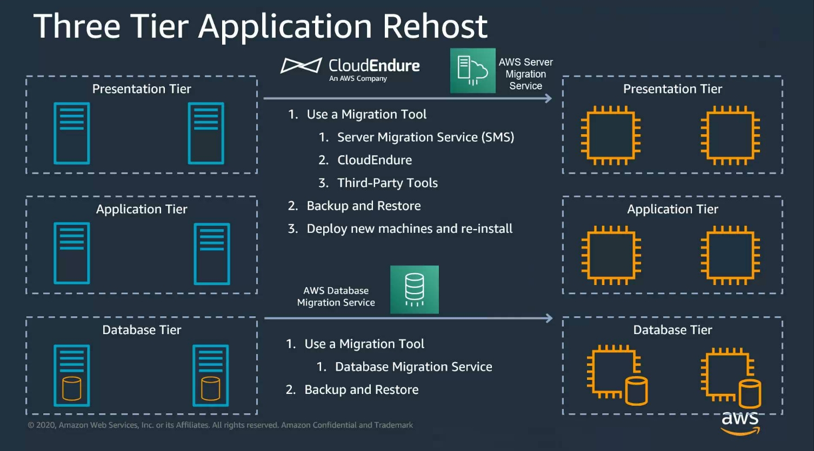

Migrate Windows Workloads¶
Applications¶
-
CloudEndure
-
AWS Server Migration Server -> Create AMIS

Lab - Trust Relationship between AWS Managed AD and On-Premise AD with FSX¶
AWS Support Contact: Hans Moser - hansmose@amazon.ch
-
Hans Moser - Info About D: Drive
- Regarding D: Drive: In our ‘source Fileserver’ we have the files on C:, hence the first export also include the directory paths to C:
- But on FSX, our target, the data drive is D: So to make the import work, we’ve to change the paths, so that we target the correct folder paths on the destination (our FSX).
Cloudformation¶
Parameters¶
| Key | Value |
|---|---|
| ADServer1InstanceType | m5.large |
| ADServer1NetBIOSName | DC1 |
| ADServer1PrivateIP | 10.0.0.10 |
| ASGInstanceType | m5.large |
| ASGSize | 2 |
| AvailabilityZones | us-west-2a,us-west-2b |
| DemoInstances | No |
| DeployManagedAD | Yes |
| DomainAdminPassword | **** |
| DomainAdminUser | Admin |
| DomainDNSName | example.com |
| DomainNetBIOSName | example |
| ManagedADEdition | Standard |
| ManagedDomainDNSName | managedexample.com |
| ManagedDomainNetBIOSName | managedexample |
| NumberOfAZs | 2 |
| PrivateSubnet1CIDR | 10.0.0.0/19 |
| PrivateSubnet2CIDR | 10.0.32.0/19 |
| PrivateSubnet3CIDR | - |
| PublicSubnet1CIDR | 10.0.128.0/20 |
| PublicSubnet2CIDR | 10.0.144.0/20 |
| PublicSubnet3CIDR | - |
| QSS3BucketName | alpublic |
| QSS3KeyPrefix | quickstart-microsoft-activedirectory/ |
| SrvInstanceType | t3.large |
| VPCCIDR | 10.0.0.0/16 |
VPCStack¶
{ "AWSTemplateFormatVersion": "2010-09-09", "Description": "This template creates a Multi-AZ, multi-subnet VPC infrastructure with managed NAT gateways in the public subnet for each Availability Zone. You can also create additional private subnets with dedicated custom network access control lists (ACLs). If you deploy the Quick Start in a region that doesn't support NAT gateways, NAT instances are deployed instead. **WARNING** This template creates AWS resources. You will be billed for the AWS resources used if you create a stack from this template. QS(0027)", "Metadata": { "AWS::CloudFormation::Interface": { "ParameterGroups": [ { "Label": { "default": "Availability Zone Configuration" }, "Parameters": [ "AvailabilityZones", "NumberOfAZs" ] }, { "Label": { "default": "Network Configuration" }, "Parameters": [ "VPCCIDR", "PublicSubnet1CIDR", "PublicSubnet2CIDR", "PublicSubnet3CIDR", "PublicSubnet4CIDR", "PublicSubnetTag1", "PublicSubnetTag2", "PublicSubnetTag3", "CreatePrivateSubnets", "PrivateSubnet1ACIDR", "PrivateSubnet2ACIDR", "PrivateSubnet3ACIDR", "PrivateSubnet4ACIDR", "PrivateSubnetATag1", "PrivateSubnetATag2", "PrivateSubnetATag3", "CreateAdditionalPrivateSubnets", "PrivateSubnet1BCIDR", "PrivateSubnet2BCIDR", "PrivateSubnet3BCIDR", "PrivateSubnet4BCIDR", "PrivateSubnetBTag1", "PrivateSubnetBTag2", "PrivateSubnetBTag3", "VPCTenancy" ] }, { "Label": { "default": "Deprecated: NAT Instance Configuration" }, "Parameters": [ "KeyPairName", "NATInstanceType" ] } ], "ParameterLabels": { "AvailabilityZones": { "default": "Availability Zones" }, "CreateAdditionalPrivateSubnets": { "default": "Create additional private subnets with dedicated network ACLs" }, "CreatePrivateSubnets": { "default": "Create private subnets" }, "KeyPairName": { "default": "Deprecated: Key pair name" }, "NATInstanceType": { "default": "Deprecated: NAT instance type" }, "NumberOfAZs": { "default": "Number of Availability Zones" }, "PrivateSubnet1ACIDR": { "default": "Private subnet 1A CIDR" }, "PrivateSubnet1BCIDR": { "default": "Private subnet 1B with dedicated network ACL CIDR" }, "PrivateSubnet2ACIDR": { "default": "Private subnet 2A CIDR" }, "PrivateSubnet2BCIDR": { "default": "Private subnet 2B with dedicated network ACL CIDR" }, "PrivateSubnet3ACIDR": { "default": "Private subnet 3A CIDR" }, "PrivateSubnet3BCIDR": { "default": "Private subnet 3B with dedicated network ACL CIDR" }, "PrivateSubnet4ACIDR": { "default": "Private subnet 4A CIDR" }, "PrivateSubnet4BCIDR": { "default": "Private subnet 4B with dedicated network ACL CIDR" }, "PrivateSubnetATag1": { "default": "Tag for Private A Subnets" }, "PrivateSubnetATag2": { "default": "Tag for Private A Subnets" }, "PrivateSubnetATag3": { "default": "Tag for Private A Subnets" }, "PrivateSubnetBTag1": { "default": "Tag for Private B Subnets" }, "PrivateSubnetBTag2": { "default": "Tag for Private B Subnets" }, "PrivateSubnetBTag3": { "default": "Tag for Private B Subnets" }, "PublicSubnet1CIDR": { "default": "Public subnet 1 CIDR" }, "PublicSubnet2CIDR": { "default": "Public subnet 2 CIDR" }, "PublicSubnet3CIDR": { "default": "Public subnet 3 CIDR" }, "PublicSubnet4CIDR": { "default": "Public subnet 4 CIDR" }, "PublicSubnetTag1": { "default": "Tag for Public Subnets" }, "PublicSubnetTag2": { "default": "Tag for Public Subnets" }, "PublicSubnetTag3": { "default": "Tag for Public Subnets" }, "VPCCIDR": { "default": "VPC CIDR" }, "VPCTenancy": { "default": "VPC Tenancy" } } } }, "Parameters": { "AvailabilityZones": { "Description": "List of Availability Zones to use for the subnets in the VPC. Note: The logical order is preserved.", "Type": "List<AWS::EC2::AvailabilityZone::Name>" }, "CreateAdditionalPrivateSubnets": { "AllowedValues": [ "true", "false" ], "Default": "false", "Description": "Set to true to create a network ACL protected subnet in each Availability Zone. If false, the CIDR parameters for those subnets will be ignored. If true, it also requires that the 'Create private subnets' parameter is also true to have any effect.", "Type": "String" }, "CreatePrivateSubnets": { "AllowedValues": [ "true", "false" ], "Default": "true", "Description": "Set to false to create only public subnets. If false, the CIDR parameters for ALL private subnets will be ignored.", "Type": "String" }, "KeyPairName": { "Description": "Deprecated. NAT gateways are now supported in all regions.", "Type": "String", "Default": "deprecated" }, "NATInstanceType": { "Default": "deprecated", "Description": "Deprecated. NAT gateways are now supported in all regions.", "Type": "String" }, "NumberOfAZs": { "AllowedValues": [ "2", "3", "4" ], "Default": "2", "Description": "Number of Availability Zones to use in the VPC. This must match your selections in the list of Availability Zones parameter.", "Type": "String" }, "PrivateSubnet1ACIDR": { "AllowedPattern": "^(([0-9]|[1-9][0-9]|1[0-9]{2}|2[0-4][0-9]|25[0-5])\\.){3}([0-9]|[1-9][0-9]|1[0-9]{2}|2[0-4][0-9]|25[0-5])(\\/(1[6-9]|2[0-8]))$", "ConstraintDescription": "CIDR block parameter must be in the form x.x.x.x/16-28", "Default": "10.0.0.0/19", "Description": "CIDR block for private subnet 1A located in Availability Zone 1", "Type": "String" }, "PrivateSubnet1BCIDR": { "AllowedPattern": "^(([0-9]|[1-9][0-9]|1[0-9]{2}|2[0-4][0-9]|25[0-5])\\.){3}([0-9]|[1-9][0-9]|1[0-9]{2}|2[0-4][0-9]|25[0-5])(\\/(1[6-9]|2[0-8]))$", "ConstraintDescription": "CIDR block parameter must be in the form x.x.x.x/16-28", "Default": "10.0.192.0/21", "Description": "CIDR block for private subnet 1B with dedicated network ACL located in Availability Zone 1", "Type": "String" }, "PrivateSubnet2ACIDR": { "AllowedPattern": "^(([0-9]|[1-9][0-9]|1[0-9]{2}|2[0-4][0-9]|25[0-5])\\.){3}([0-9]|[1-9][0-9]|1[0-9]{2}|2[0-4][0-9]|25[0-5])(\\/(1[6-9]|2[0-8]))$", "ConstraintDescription": "CIDR block parameter must be in the form x.x.x.x/16-28", "Default": "10.0.32.0/19", "Description": "CIDR block for private subnet 2A located in Availability Zone 2", "Type": "String" }, "PrivateSubnet2BCIDR": { "AllowedPattern": "^(([0-9]|[1-9][0-9]|1[0-9]{2}|2[0-4][0-9]|25[0-5])\\.){3}([0-9]|[1-9][0-9]|1[0-9]{2}|2[0-4][0-9]|25[0-5])(\\/(1[6-9]|2[0-8]))$", "ConstraintDescription": "CIDR block parameter must be in the form x.x.x.x/16-28", "Default": "10.0.200.0/21", "Description": "CIDR block for private subnet 2B with dedicated network ACL located in Availability Zone 2", "Type": "String" }, "PrivateSubnet3ACIDR": { "AllowedPattern": "^(([0-9]|[1-9][0-9]|1[0-9]{2}|2[0-4][0-9]|25[0-5])\\.){3}([0-9]|[1-9][0-9]|1[0-9]{2}|2[0-4][0-9]|25[0-5])(\\/(1[6-9]|2[0-8]))$", "ConstraintDescription": "CIDR block parameter must be in the form x.x.x.x/16-28", "Default": "10.0.64.0/19", "Description": "CIDR block for private subnet 3A located in Availability Zone 3", "Type": "String" }, "PrivateSubnet3BCIDR": { "AllowedPattern": "^(([0-9]|[1-9][0-9]|1[0-9]{2}|2[0-4][0-9]|25[0-5])\\.){3}([0-9]|[1-9][0-9]|1[0-9]{2}|2[0-4][0-9]|25[0-5])(\\/(1[6-9]|2[0-8]))$", "ConstraintDescription": "CIDR block parameter must be in the form x.x.x.x/16-28", "Default": "10.0.208.0/21", "Description": "CIDR block for private subnet 3B with dedicated network ACL located in Availability Zone 3", "Type": "String" }, "PrivateSubnet4ACIDR": { "AllowedPattern": "^(([0-9]|[1-9][0-9]|1[0-9]{2}|2[0-4][0-9]|25[0-5])\\.){3}([0-9]|[1-9][0-9]|1[0-9]{2}|2[0-4][0-9]|25[0-5])(\\/(1[6-9]|2[0-8]))$", "ConstraintDescription": "CIDR block parameter must be in the form x.x.x.x/16-28", "Default": "10.0.96.0/19", "Description": "CIDR block for private subnet 4A located in Availability Zone 4", "Type": "String" }, "PrivateSubnet4BCIDR": { "AllowedPattern": "^(([0-9]|[1-9][0-9]|1[0-9]{2}|2[0-4][0-9]|25[0-5])\\.){3}([0-9]|[1-9][0-9]|1[0-9]{2}|2[0-4][0-9]|25[0-5])(\\/(1[6-9]|2[0-8]))$", "ConstraintDescription": "CIDR block parameter must be in the form x.x.x.x/16-28", "Default": "10.0.216.0/21", "Description": "CIDR block for private subnet 4B with dedicated network ACL located in Availability Zone 4", "Type": "String" }, "PrivateSubnetATag1": { "AllowedPattern": "^([a-zA-Z0-9+\\-._:/@]+=[a-zA-Z0-9+\\-.,_:/@ *\\\\\"'\\[\\]\\{\\}]*)?$", "ConstraintDescription": "tags must be in format \"Key=Value\" keys can only contain [a-zA-Z0-9+\\-._:/@], values can contain [a-zA-Z0-9+\\-._:/@ *\\\\\"'\\[\\]\\{\\}]", "Default": "Network=Private", "Description": "tag to add to private subnets A, in format Key=Value (Optional)", "Type": "String" }, "PrivateSubnetATag2": { "AllowedPattern": "^([a-zA-Z0-9+\\-._:/@]+=[a-zA-Z0-9+\\-.,_:/@ *\\\\\"'\\[\\]\\{\\}]*)?$", "ConstraintDescription": "tags must be in format \"Key=Value\" keys can only contain [a-zA-Z0-9+\\-._:/@], values can contain [a-zA-Z0-9+\\-._:/@ *\\\\\"'\\[\\]\\{\\}]", "Default": "", "Description": "tag to add to private subnets A, in format Key=Value (Optional)", "Type": "String" }, "PrivateSubnetATag3": { "AllowedPattern": "^([a-zA-Z0-9+\\-._:/@]+=[a-zA-Z0-9+\\-.,_:/@ *\\\\\"'\\[\\]\\{\\}]*)?$", "ConstraintDescription": "tags must be in format \"Key=Value\" keys can only contain [a-zA-Z0-9+\\-._:/@], values can contain [a-zA-Z0-9+\\-._:/@ *\\\\\"'\\[\\]\\{\\}]", "Default": "", "Description": "tag to add to private subnets A, in format Key=Value (Optional)", "Type": "String" }, "PrivateSubnetBTag1": { "AllowedPattern": "^([a-zA-Z0-9+\\-._:/@]+=[a-zA-Z0-9+\\-.,_:/@ *\\\\\"'\\[\\]\\{\\}]*)?$", "ConstraintDescription": "tags must be in format \"Key=Value\" keys can only contain [a-zA-Z0-9+\\-._:/@], values can contain [a-zA-Z0-9+\\-._:/@ *\\\\\"'\\[\\]\\{\\}]", "Default": "Network=Private", "Description": "tag to add to private subnets B, in format Key=Value (Optional)", "Type": "String" }, "PrivateSubnetBTag2": { "AllowedPattern": "^([a-zA-Z0-9+\\-._:/@]+=[a-zA-Z0-9+\\-.,_:/@ *\\\\\"'\\[\\]\\{\\}]*)?$", "ConstraintDescription": "tags must be in format \"Key=Value\" keys can only contain [a-zA-Z0-9+\\-._:/@], values can contain [a-zA-Z0-9+\\-._:/@ *\\\\\"'\\[\\]\\{\\}]", "Default": "", "Description": "tag to add to private subnets B, in format Key=Value (Optional)", "Type": "String" }, "PrivateSubnetBTag3": { "AllowedPattern": "^([a-zA-Z0-9+\\-._:/@]+=[a-zA-Z0-9+\\-.,_:/@ *\\\\\"'\\[\\]\\{\\}]*)?$", "ConstraintDescription": "tags must be in format \"Key=Value\" keys can only contain [a-zA-Z0-9+\\-._:/@], values can contain [a-zA-Z0-9+\\-._:/@ *\\\\\"'\\[\\]\\{\\}]", "Default": "", "Description": "tag to add to private subnets B, in format Key=Value (Optional)", "Type": "String" }, "PublicSubnet1CIDR": { "AllowedPattern": "^(([0-9]|[1-9][0-9]|1[0-9]{2}|2[0-4][0-9]|25[0-5])\\.){3}([0-9]|[1-9][0-9]|1[0-9]{2}|2[0-4][0-9]|25[0-5])(\\/(1[6-9]|2[0-8]))$", "ConstraintDescription": "CIDR block parameter must be in the form x.x.x.x/16-28", "Default": "10.0.128.0/20", "Description": "CIDR block for the public DMZ subnet 1 located in Availability Zone 1", "Type": "String" }, "PublicSubnet2CIDR": { "AllowedPattern": "^(([0-9]|[1-9][0-9]|1[0-9]{2}|2[0-4][0-9]|25[0-5])\\.){3}([0-9]|[1-9][0-9]|1[0-9]{2}|2[0-4][0-9]|25[0-5])(\\/(1[6-9]|2[0-8]))$", "ConstraintDescription": "CIDR block parameter must be in the form x.x.x.x/16-28", "Default": "10.0.144.0/20", "Description": "CIDR block for the public DMZ subnet 2 located in Availability Zone 2", "Type": "String" }, "PublicSubnet3CIDR": { "AllowedPattern": "^(([0-9]|[1-9][0-9]|1[0-9]{2}|2[0-4][0-9]|25[0-5])\\.){3}([0-9]|[1-9][0-9]|1[0-9]{2}|2[0-4][0-9]|25[0-5])(\\/(1[6-9]|2[0-8]))$", "ConstraintDescription": "CIDR block parameter must be in the form x.x.x.x/16-28", "Default": "10.0.160.0/20", "Description": "CIDR block for the public DMZ subnet 3 located in Availability Zone 3", "Type": "String" }, "PublicSubnet4CIDR": { "AllowedPattern": "^(([0-9]|[1-9][0-9]|1[0-9]{2}|2[0-4][0-9]|25[0-5])\\.){3}([0-9]|[1-9][0-9]|1[0-9]{2}|2[0-4][0-9]|25[0-5])(\\/(1[6-9]|2[0-8]))$", "ConstraintDescription": "CIDR block parameter must be in the form x.x.x.x/16-28", "Default": "10.0.176.0/20", "Description": "CIDR block for the public DMZ subnet 4 located in Availability Zone 4", "Type": "String" }, "PublicSubnetTag1": { "AllowedPattern": "^([a-zA-Z0-9+\\-._:/@]+=[a-zA-Z0-9+\\-.,_:/@ *\\\\\"'\\[\\]\\{\\}]*)?$", "ConstraintDescription": "tags must be in format \"Key=Value\" keys can only contain [a-zA-Z0-9+\\-._:/@], values can contain [a-zA-Z0-9+\\-._:/@ *\\\\\"'\\[\\]\\{\\}]", "Default": "Network=Public", "Description": "tag to add to public subnets, in format Key=Value (Optional)", "Type": "String" }, "PublicSubnetTag2": { "AllowedPattern": "^([a-zA-Z0-9+\\-._:/@]+=[a-zA-Z0-9+\\-.,_:/@ *\\\\\"'\\[\\]\\{\\}]*)?$", "ConstraintDescription": "tags must be in format \"Key=Value\" keys can only contain [a-zA-Z0-9+\\-._:/@], values can contain [a-zA-Z0-9+\\-._:/@ *\\\\\"'\\[\\]\\{\\}]", "Default": "", "Description": "tag to add to public subnets, in format Key=Value (Optional)", "Type": "String" }, "PublicSubnetTag3": { "AllowedPattern": "^([a-zA-Z0-9+\\-._:/@]+=[a-zA-Z0-9+\\-.,_:/@ *\\\\\"'\\[\\]\\{\\}]*)?$", "ConstraintDescription": "tags must be in format \"Key=Value\" keys can only contain [a-zA-Z0-9+\\-._:/@], values can contain [a-zA-Z0-9+\\-._:/@ *\\\\\"'\\[\\]\\{\\}]", "Default": "", "Description": "tag to add to public subnets, in format Key=Value (Optional)", "Type": "String" }, "VPCCIDR": { "AllowedPattern": "^(([0-9]|[1-9][0-9]|1[0-9]{2}|2[0-4][0-9]|25[0-5])\\.){3}([0-9]|[1-9][0-9]|1[0-9]{2}|2[0-4][0-9]|25[0-5])(\\/(1[6-9]|2[0-8]))$", "ConstraintDescription": "CIDR block parameter must be in the form x.x.x.x/16-28", "Default": "10.0.0.0/16", "Description": "CIDR block for the VPC", "Type": "String" }, "VPCTenancy": { "AllowedValues": [ "default", "dedicated" ], "Default": "default", "Description": "The allowed tenancy of instances launched into the VPC", "Type": "String" } }, "Conditions": { "3AZCondition": { "Fn::Or": [ { "Fn::Equals": [ { "Ref": "NumberOfAZs" }, "3" ] }, { "Condition": "4AZCondition" } ] }, "4AZCondition": { "Fn::Equals": [ { "Ref": "NumberOfAZs" }, "4" ] }, "AdditionalPrivateSubnetsCondition": { "Fn::And": [ { "Fn::Equals": [ { "Ref": "CreatePrivateSubnets" }, "true" ] }, { "Fn::Equals": [ { "Ref": "CreateAdditionalPrivateSubnets" }, "true" ] } ] }, "AdditionalPrivateSubnets&3AZCondition": { "Fn::And": [ { "Condition": "AdditionalPrivateSubnetsCondition" }, { "Condition": "3AZCondition" } ] }, "AdditionalPrivateSubnets&4AZCondition": { "Fn::And": [ { "Condition": "AdditionalPrivateSubnetsCondition" }, { "Condition": "4AZCondition" } ] }, "GovCloudCondition": { "Fn::Equals": [ { "Ref": "AWS::Region" }, "us-gov-west-1" ] }, "NVirginiaRegionCondition": { "Fn::Equals": [ { "Ref": "AWS::Region" }, "us-east-1" ] }, "PrivateSubnetsCondition": { "Fn::Equals": [ { "Ref": "CreatePrivateSubnets" }, "true" ] }, "PrivateSubnets&3AZCondition": { "Fn::And": [ { "Condition": "PrivateSubnetsCondition" }, { "Condition": "3AZCondition" } ] }, "PrivateSubnets&4AZCondition": { "Fn::And": [ { "Condition": "PrivateSubnetsCondition" }, { "Condition": "4AZCondition" } ] }, "PrivateSubnetATag1Condition": { "Fn::Not": [ { "Fn::Equals": [ { "Ref": "PrivateSubnetATag1" }, "" ] } ] }, "PrivateSubnetATag2Condition": { "Fn::Not": [ { "Fn::Equals": [ { "Ref": "PrivateSubnetATag2" }, "" ] } ] }, "PrivateSubnetATag3Condition": { "Fn::Not": [ { "Fn::Equals": [ { "Ref": "PrivateSubnetATag3" }, "" ] } ] }, "PrivateSubnetBTag1Condition": { "Fn::Not": [ { "Fn::Equals": [ { "Ref": "PrivateSubnetBTag1" }, "" ] } ] }, "PrivateSubnetBTag2Condition": { "Fn::Not": [ { "Fn::Equals": [ { "Ref": "PrivateSubnetBTag2" }, "" ] } ] }, "PrivateSubnetBTag3Condition": { "Fn::Not": [ { "Fn::Equals": [ { "Ref": "PrivateSubnetBTag3" }, "" ] } ] }, "PublicSubnetTag1Condition": { "Fn::Not": [ { "Fn::Equals": [ { "Ref": "PublicSubnetTag1" }, "" ] } ] }, "PublicSubnetTag2Condition": { "Fn::Not": [ { "Fn::Equals": [ { "Ref": "PublicSubnetTag2" }, "" ] } ] }, "PublicSubnetTag3Condition": { "Fn::Not": [ { "Fn::Equals": [ { "Ref": "PublicSubnetTag3" }, "" ] } ] } }, "Resources": { "DHCPOptions": { "Type": "AWS::EC2::DHCPOptions", "Properties": { "DomainName": { "Fn::If": [ "NVirginiaRegionCondition", "ec2.internal", { "Fn::Sub": "${AWS::Region}.compute.internal" } ] }, "DomainNameServers": [ "AmazonProvidedDNS" ] } }, "VPC": { "Type": "AWS::EC2::VPC", "Properties": { "CidrBlock": { "Ref": "VPCCIDR" }, "InstanceTenancy": { "Ref": "VPCTenancy" }, "EnableDnsSupport": true, "EnableDnsHostnames": true, "Tags": [ { "Key": "Name", "Value": { "Ref": "AWS::StackName" } } ] } }, "VPCDHCPOptionsAssociation": { "Type": "AWS::EC2::VPCDHCPOptionsAssociation", "Properties": { "VpcId": { "Ref": "VPC" }, "DhcpOptionsId": { "Ref": "DHCPOptions" } } }, "InternetGateway": { "Type": "AWS::EC2::InternetGateway", "Properties": { "Tags": [ { "Key": "Name", "Value": { "Ref": "AWS::StackName" } } ] } }, "VPCGatewayAttachment": { "Type": "AWS::EC2::VPCGatewayAttachment", "Properties": { "VpcId": { "Ref": "VPC" }, "InternetGatewayId": { "Ref": "InternetGateway" } } }, "PrivateSubnet1A": { "Condition": "PrivateSubnetsCondition", "Type": "AWS::EC2::Subnet", "Properties": { "VpcId": { "Ref": "VPC" }, "CidrBlock": { "Ref": "PrivateSubnet1ACIDR" }, "AvailabilityZone": { "Fn::Select": [ "0", { "Ref": "AvailabilityZones" } ] }, "Tags": [ { "Key": "Name", "Value": "Private subnet 1A" }, { "Fn::If": [ "PrivateSubnetATag1Condition", { "Key": { "Fn::Select": [ "0", { "Fn::Split": [ "=", { "Ref": "PrivateSubnetATag1" } ] } ] }, "Value": { "Fn::Select": [ "1", { "Fn::Split": [ "=", { "Ref": "PrivateSubnetATag1" } ] } ] } }, { "Ref": "AWS::NoValue" } ] }, { "Fn::If": [ "PrivateSubnetATag2Condition", { "Key": { "Fn::Select": [ "0", { "Fn::Split": [ "=", { "Ref": "PrivateSubnetATag2" } ] } ] }, "Value": { "Fn::Select": [ "1", { "Fn::Split": [ "=", { "Ref": "PrivateSubnetATag2" } ] } ] } }, { "Ref": "AWS::NoValue" } ] }, { "Fn::If": [ "PrivateSubnetATag3Condition", { "Key": { "Fn::Select": [ "0", { "Fn::Split": [ "=", { "Ref": "PrivateSubnetATag3" } ] } ] }, "Value": { "Fn::Select": [ "1", { "Fn::Split": [ "=", { "Ref": "PrivateSubnetATag3" } ] } ] } }, { "Ref": "AWS::NoValue" } ] } ] } }, "PrivateSubnet1B": { "Condition": "AdditionalPrivateSubnetsCondition", "Type": "AWS::EC2::Subnet", "Properties": { "VpcId": { "Ref": "VPC" }, "CidrBlock": { "Ref": "PrivateSubnet1BCIDR" }, "AvailabilityZone": { "Fn::Select": [ "0", { "Ref": "AvailabilityZones" } ] }, "Tags": [ { "Key": "Name", "Value": "Private subnet 1B" }, { "Fn::If": [ "PrivateSubnetBTag1Condition", { "Key": { "Fn::Select": [ "0", { "Fn::Split": [ "=", { "Ref": "PrivateSubnetBTag1" } ] } ] }, "Value": { "Fn::Select": [ "1", { "Fn::Split": [ "=", { "Ref": "PrivateSubnetBTag1" } ] } ] } }, { "Ref": "AWS::NoValue" } ] }, { "Fn::If": [ "PrivateSubnetBTag2Condition", { "Key": { "Fn::Select": [ "0", { "Fn::Split": [ "=", { "Ref": "PrivateSubnetBTag2" } ] } ] }, "Value": { "Fn::Select": [ "1", { "Fn::Split": [ "=", { "Ref": "PrivateSubnetBTag2" } ] } ] } }, { "Ref": "AWS::NoValue" } ] }, { "Fn::If": [ "PrivateSubnetBTag3Condition", { "Key": { "Fn::Select": [ "0", { "Fn::Split": [ "=", { "Ref": "PrivateSubnetBTag3" } ] } ] }, "Value": { "Fn::Select": [ "1", { "Fn::Split": [ "=", { "Ref": "PrivateSubnetBTag3" } ] } ] } }, { "Ref": "AWS::NoValue" } ] } ] } }, "PrivateSubnet2A": { "Condition": "PrivateSubnetsCondition", "Type": "AWS::EC2::Subnet", "Properties": { "VpcId": { "Ref": "VPC" }, "CidrBlock": { "Ref": "PrivateSubnet2ACIDR" }, "AvailabilityZone": { "Fn::Select": [ "1", { "Ref": "AvailabilityZones" } ] }, "Tags": [ { "Key": "Name", "Value": "Private subnet 2A" }, { "Fn::If": [ "PrivateSubnetATag1Condition", { "Key": { "Fn::Select": [ "0", { "Fn::Split": [ "=", { "Ref": "PrivateSubnetATag1" } ] } ] }, "Value": { "Fn::Select": [ "1", { "Fn::Split": [ "=", { "Ref": "PrivateSubnetATag1" } ] } ] } }, { "Ref": "AWS::NoValue" } ] }, { "Fn::If": [ "PrivateSubnetATag2Condition", { "Key": { "Fn::Select": [ "0", { "Fn::Split": [ "=", { "Ref": "PrivateSubnetATag2" } ] } ] }, "Value": { "Fn::Select": [ "1", { "Fn::Split": [ "=", { "Ref": "PrivateSubnetATag2" } ] } ] } }, { "Ref": "AWS::NoValue" } ] }, { "Fn::If": [ "PrivateSubnetATag3Condition", { "Key": { "Fn::Select": [ "0", { "Fn::Split": [ "=", { "Ref": "PrivateSubnetATag3" } ] } ] }, "Value": { "Fn::Select": [ "1", { "Fn::Split": [ "=", { "Ref": "PrivateSubnetATag3" } ] } ] } }, { "Ref": "AWS::NoValue" } ] } ] } }, "PrivateSubnet2B": { "Condition": "AdditionalPrivateSubnetsCondition", "Type": "AWS::EC2::Subnet", "Properties": { "VpcId": { "Ref": "VPC" }, "CidrBlock": { "Ref": "PrivateSubnet2BCIDR" }, "AvailabilityZone": { "Fn::Select": [ "1", { "Ref": "AvailabilityZones" } ] }, "Tags": [ { "Key": "Name", "Value": "Private subnet 2B" }, { "Fn::If": [ "PrivateSubnetBTag1Condition", { "Key": { "Fn::Select": [ "0", { "Fn::Split": [ "=", { "Ref": "PrivateSubnetBTag1" } ] } ] }, "Value": { "Fn::Select": [ "1", { "Fn::Split": [ "=", { "Ref": "PrivateSubnetBTag1" } ] } ] } }, { "Ref": "AWS::NoValue" } ] }, { "Fn::If": [ "PrivateSubnetBTag2Condition", { "Key": { "Fn::Select": [ "0", { "Fn::Split": [ "=", { "Ref": "PrivateSubnetBTag2" } ] } ] }, "Value": { "Fn::Select": [ "1", { "Fn::Split": [ "=", { "Ref": "PrivateSubnetBTag2" } ] } ] } }, { "Ref": "AWS::NoValue" } ] }, { "Fn::If": [ "PrivateSubnetBTag3Condition", { "Key": { "Fn::Select": [ "0", { "Fn::Split": [ "=", { "Ref": "PrivateSubnetBTag3" } ] } ] }, "Value": { "Fn::Select": [ "1", { "Fn::Split": [ "=", { "Ref": "PrivateSubnetBTag3" } ] } ] } }, { "Ref": "AWS::NoValue" } ] } ] } }, "PrivateSubnet3A": { "Condition": "PrivateSubnets&3AZCondition", "Type": "AWS::EC2::Subnet", "Properties": { "VpcId": { "Ref": "VPC" }, "CidrBlock": { "Ref": "PrivateSubnet3ACIDR" }, "AvailabilityZone": { "Fn::Select": [ "2", { "Ref": "AvailabilityZones" } ] }, "Tags": [ { "Key": "Name", "Value": "Private subnet 3A" }, { "Fn::If": [ "PrivateSubnetATag1Condition", { "Key": { "Fn::Select": [ "0", { "Fn::Split": [ "=", { "Ref": "PrivateSubnetATag1" } ] } ] }, "Value": { "Fn::Select": [ "1", { "Fn::Split": [ "=", { "Ref": "PrivateSubnetATag1" } ] } ] } }, { "Ref": "AWS::NoValue" } ] }, { "Fn::If": [ "PrivateSubnetATag2Condition", { "Key": { "Fn::Select": [ "0", { "Fn::Split": [ "=", { "Ref": "PrivateSubnetATag2" } ] } ] }, "Value": { "Fn::Select": [ "1", { "Fn::Split": [ "=", { "Ref": "PrivateSubnetATag2" } ] } ] } }, { "Ref": "AWS::NoValue" } ] }, { "Fn::If": [ "PrivateSubnetATag3Condition", { "Key": { "Fn::Select": [ "0", { "Fn::Split": [ "=", { "Ref": "PrivateSubnetATag3" } ] } ] }, "Value": { "Fn::Select": [ "1", { "Fn::Split": [ "=", { "Ref": "PrivateSubnetATag3" } ] } ] } }, { "Ref": "AWS::NoValue" } ] } ] } }, "PrivateSubnet3B": { "Condition": "AdditionalPrivateSubnets&3AZCondition", "Type": "AWS::EC2::Subnet", "Properties": { "VpcId": { "Ref": "VPC" }, "CidrBlock": { "Ref": "PrivateSubnet3BCIDR" }, "AvailabilityZone": { "Fn::Select": [ "2", { "Ref": "AvailabilityZones" } ] }, "Tags": [ { "Key": "Name", "Value": "Private subnet 3B" }, { "Fn::If": [ "PrivateSubnetBTag1Condition", { "Key": { "Fn::Select": [ "0", { "Fn::Split": [ "=", { "Ref": "PrivateSubnetBTag1" } ] } ] }, "Value": { "Fn::Select": [ "1", { "Fn::Split": [ "=", { "Ref": "PrivateSubnetBTag1" } ] } ] } }, { "Ref": "AWS::NoValue" } ] }, { "Fn::If": [ "PrivateSubnetBTag2Condition", { "Key": { "Fn::Select": [ "0", { "Fn::Split": [ "=", { "Ref": "PrivateSubnetBTag2" } ] } ] }, "Value": { "Fn::Select": [ "1", { "Fn::Split": [ "=", { "Ref": "PrivateSubnetBTag2" } ] } ] } }, { "Ref": "AWS::NoValue" } ] }, { "Fn::If": [ "PrivateSubnetBTag3Condition", { "Key": { "Fn::Select": [ "0", { "Fn::Split": [ "=", { "Ref": "PrivateSubnetBTag3" } ] } ] }, "Value": { "Fn::Select": [ "1", { "Fn::Split": [ "=", { "Ref": "PrivateSubnetBTag3" } ] } ] } }, { "Ref": "AWS::NoValue" } ] } ] } }, "PrivateSubnet4A": { "Condition": "PrivateSubnets&4AZCondition", "Type": "AWS::EC2::Subnet", "Properties": { "VpcId": { "Ref": "VPC" }, "CidrBlock": { "Ref": "PrivateSubnet4ACIDR" }, "AvailabilityZone": { "Fn::Select": [ "3", { "Ref": "AvailabilityZones" } ] }, "Tags": [ { "Key": "Name", "Value": "Private subnet 4A" }, { "Fn::If": [ "PrivateSubnetATag1Condition", { "Key": { "Fn::Select": [ "0", { "Fn::Split": [ "=", { "Ref": "PrivateSubnetATag1" } ] } ] }, "Value": { "Fn::Select": [ "1", { "Fn::Split": [ "=", { "Ref": "PrivateSubnetATag1" } ] } ] } }, { "Ref": "AWS::NoValue" } ] }, { "Fn::If": [ "PrivateSubnetATag2Condition", { "Key": { "Fn::Select": [ "0", { "Fn::Split": [ "=", { "Ref": "PrivateSubnetATag2" } ] } ] }, "Value": { "Fn::Select": [ "1", { "Fn::Split": [ "=", { "Ref": "PrivateSubnetATag2" } ] } ] } }, { "Ref": "AWS::NoValue" } ] }, { "Fn::If": [ "PrivateSubnetATag3Condition", { "Key": { "Fn::Select": [ "0", { "Fn::Split": [ "=", { "Ref": "PrivateSubnetATag3" } ] } ] }, "Value": { "Fn::Select": [ "1", { "Fn::Split": [ "=", { "Ref": "PrivateSubnetATag3" } ] } ] } }, { "Ref": "AWS::NoValue" } ] } ] } }, "PrivateSubnet4B": { "Condition": "AdditionalPrivateSubnets&4AZCondition", "Type": "AWS::EC2::Subnet", "Properties": { "VpcId": { "Ref": "VPC" }, "CidrBlock": { "Ref": "PrivateSubnet4BCIDR" }, "AvailabilityZone": { "Fn::Select": [ "3", { "Ref": "AvailabilityZones" } ] }, "Tags": [ { "Key": "Name", "Value": "Private subnet 4B" }, { "Fn::If": [ "PrivateSubnetBTag1Condition", { "Key": { "Fn::Select": [ "0", { "Fn::Split": [ "=", { "Ref": "PrivateSubnetBTag1" } ] } ] }, "Value": { "Fn::Select": [ "1", { "Fn::Split": [ "=", { "Ref": "PrivateSubnetBTag1" } ] } ] } }, { "Ref": "AWS::NoValue" } ] }, { "Fn::If": [ "PrivateSubnetBTag2Condition", { "Key": { "Fn::Select": [ "0", { "Fn::Split": [ "=", { "Ref": "PrivateSubnetBTag2" } ] } ] }, "Value": { "Fn::Select": [ "1", { "Fn::Split": [ "=", { "Ref": "PrivateSubnetBTag2" } ] } ] } }, { "Ref": "AWS::NoValue" } ] }, { "Fn::If": [ "PrivateSubnetBTag3Condition", { "Key": { "Fn::Select": [ "0", { "Fn::Split": [ "=", { "Ref": "PrivateSubnetBTag3" } ] } ] }, "Value": { "Fn::Select": [ "1", { "Fn::Split": [ "=", { "Ref": "PrivateSubnetBTag3" } ] } ] } }, { "Ref": "AWS::NoValue" } ] } ] } }, "PublicSubnet1": { "Type": "AWS::EC2::Subnet", "Properties": { "VpcId": { "Ref": "VPC" }, "CidrBlock": { "Ref": "PublicSubnet1CIDR" }, "AvailabilityZone": { "Fn::Select": [ "0", { "Ref": "AvailabilityZones" } ] }, "Tags": [ { "Key": "Name", "Value": "Public subnet 1" }, { "Fn::If": [ "PublicSubnetTag1Condition", { "Key": { "Fn::Select": [ "0", { "Fn::Split": [ "=", { "Ref": "PublicSubnetTag1" } ] } ] }, "Value": { "Fn::Select": [ "1", { "Fn::Split": [ "=", { "Ref": "PublicSubnetTag1" } ] } ] } }, { "Ref": "AWS::NoValue" } ] }, { "Fn::If": [ "PublicSubnetTag2Condition", { "Key": { "Fn::Select": [ "0", { "Fn::Split": [ "=", { "Ref": "PublicSubnetTag2" } ] } ] }, "Value": { "Fn::Select": [ "1", { "Fn::Split": [ "=", { "Ref": "PublicSubnetTag2" } ] } ] } }, { "Ref": "AWS::NoValue" } ] }, { "Fn::If": [ "PublicSubnetTag3Condition", { "Key": { "Fn::Select": [ "0", { "Fn::Split": [ "=", { "Ref": "PublicSubnetTag3" } ] } ] }, "Value": { "Fn::Select": [ "1", { "Fn::Split": [ "=", { "Ref": "PublicSubnetTag3" } ] } ] } }, { "Ref": "AWS::NoValue" } ] } ], "MapPublicIpOnLaunch": true } }, "PublicSubnet2": { "Type": "AWS::EC2::Subnet", "Properties": { "VpcId": { "Ref": "VPC" }, "CidrBlock": { "Ref": "PublicSubnet2CIDR" }, "AvailabilityZone": { "Fn::Select": [ "1", { "Ref": "AvailabilityZones" } ] }, "Tags": [ { "Key": "Name", "Value": "Public subnet 2" }, { "Fn::If": [ "PublicSubnetTag1Condition", { "Key": { "Fn::Select": [ "0", { "Fn::Split": [ "=", { "Ref": "PublicSubnetTag1" } ] } ] }, "Value": { "Fn::Select": [ "1", { "Fn::Split": [ "=", { "Ref": "PublicSubnetTag1" } ] } ] } }, { "Ref": "AWS::NoValue" } ] }, { "Fn::If": [ "PublicSubnetTag2Condition", { "Key": { "Fn::Select": [ "0", { "Fn::Split": [ "=", { "Ref": "PublicSubnetTag2" } ] } ] }, "Value": { "Fn::Select": [ "1", { "Fn::Split": [ "=", { "Ref": "PublicSubnetTag2" } ] } ] } }, { "Ref": "AWS::NoValue" } ] }, { "Fn::If": [ "PublicSubnetTag3Condition", { "Key": { "Fn::Select": [ "0", { "Fn::Split": [ "=", { "Ref": "PublicSubnetTag3" } ] } ] }, "Value": { "Fn::Select": [ "1", { "Fn::Split": [ "=", { "Ref": "PublicSubnetTag3" } ] } ] } }, { "Ref": "AWS::NoValue" } ] } ], "MapPublicIpOnLaunch": true } }, "PublicSubnet3": { "Condition": "3AZCondition", "Type": "AWS::EC2::Subnet", "Properties": { "VpcId": { "Ref": "VPC" }, "CidrBlock": { "Ref": "PublicSubnet3CIDR" }, "AvailabilityZone": { "Fn::Select": [ "2", { "Ref": "AvailabilityZones" } ] }, "Tags": [ { "Key": "Name", "Value": "Public subnet 3" }, { "Fn::If": [ "PublicSubnetTag1Condition", { "Key": { "Fn::Select": [ "0", { "Fn::Split": [ "=", { "Ref": "PublicSubnetTag1" } ] } ] }, "Value": { "Fn::Select": [ "1", { "Fn::Split": [ "=", { "Ref": "PublicSubnetTag1" } ] } ] } }, { "Ref": "AWS::NoValue" } ] }, { "Fn::If": [ "PublicSubnetTag2Condition", { "Key": { "Fn::Select": [ "0", { "Fn::Split": [ "=", { "Ref": "PublicSubnetTag2" } ] } ] }, "Value": { "Fn::Select": [ "1", { "Fn::Split": [ "=", { "Ref": "PublicSubnetTag2" } ] } ] } }, { "Ref": "AWS::NoValue" } ] }, { "Fn::If": [ "PublicSubnetTag3Condition", { "Key": { "Fn::Select": [ "0", { "Fn::Split": [ "=", { "Ref": "PublicSubnetTag3" } ] } ] }, "Value": { "Fn::Select": [ "1", { "Fn::Split": [ "=", { "Ref": "PublicSubnetTag3" } ] } ] } }, { "Ref": "AWS::NoValue" } ] } ], "MapPublicIpOnLaunch": true } }, "PublicSubnet4": { "Condition": "4AZCondition", "Type": "AWS::EC2::Subnet", "Properties": { "VpcId": { "Ref": "VPC" }, "CidrBlock": { "Ref": "PublicSubnet4CIDR" }, "AvailabilityZone": { "Fn::Select": [ "3", { "Ref": "AvailabilityZones" } ] }, "Tags": [ { "Key": "Name", "Value": "Public subnet 4" }, { "Fn::If": [ "PublicSubnetTag1Condition", { "Key": { "Fn::Select": [ "0", { "Fn::Split": [ "=", { "Ref": "PublicSubnetTag1" } ] } ] }, "Value": { "Fn::Select": [ "1", { "Fn::Split": [ "=", { "Ref": "PublicSubnetTag1" } ] } ] } }, { "Ref": "AWS::NoValue" } ] }, { "Fn::If": [ "PublicSubnetTag2Condition", { "Key": { "Fn::Select": [ "0", { "Fn::Split": [ "=", { "Ref": "PublicSubnetTag2" } ] } ] }, "Value": { "Fn::Select": [ "1", { "Fn::Split": [ "=", { "Ref": "PublicSubnetTag2" } ] } ] } }, { "Ref": "AWS::NoValue" } ] }, { "Fn::If": [ "PublicSubnetTag3Condition", { "Key": { "Fn::Select": [ "0", { "Fn::Split": [ "=", { "Ref": "PublicSubnetTag3" } ] } ] }, "Value": { "Fn::Select": [ "1", { "Fn::Split": [ "=", { "Ref": "PublicSubnetTag3" } ] } ] } }, { "Ref": "AWS::NoValue" } ] } ], "MapPublicIpOnLaunch": true } }, "PrivateSubnet1ARouteTable": { "Condition": "PrivateSubnetsCondition", "Type": "AWS::EC2::RouteTable", "Properties": { "VpcId": { "Ref": "VPC" }, "Tags": [ { "Key": "Name", "Value": "Private subnet 1A" }, { "Key": "Network", "Value": "Private" } ] } }, "PrivateSubnet1ARoute": { "Condition": "PrivateSubnetsCondition", "Type": "AWS::EC2::Route", "Properties": { "RouteTableId": { "Ref": "PrivateSubnet1ARouteTable" }, "DestinationCidrBlock": "0.0.0.0/0", "NatGatewayId": { "Ref": "NATGateway1" } } }, "PrivateSubnet1ARouteTableAssociation": { "Condition": "PrivateSubnetsCondition", "Type": "AWS::EC2::SubnetRouteTableAssociation", "Properties": { "SubnetId": { "Ref": "PrivateSubnet1A" }, "RouteTableId": { "Ref": "PrivateSubnet1ARouteTable" } } }, "PrivateSubnet2ARouteTable": { "Condition": "PrivateSubnetsCondition", "Type": "AWS::EC2::RouteTable", "Properties": { "VpcId": { "Ref": "VPC" }, "Tags": [ { "Key": "Name", "Value": "Private subnet 2A" }, { "Key": "Network", "Value": "Private" } ] } }, "PrivateSubnet2ARoute": { "Condition": "PrivateSubnetsCondition", "Type": "AWS::EC2::Route", "Properties": { "RouteTableId": { "Ref": "PrivateSubnet2ARouteTable" }, "DestinationCidrBlock": "0.0.0.0/0", "NatGatewayId": { "Ref": "NATGateway2" } } }, "PrivateSubnet2ARouteTableAssociation": { "Condition": "PrivateSubnetsCondition", "Type": "AWS::EC2::SubnetRouteTableAssociation", "Properties": { "SubnetId": { "Ref": "PrivateSubnet2A" }, "RouteTableId": { "Ref": "PrivateSubnet2ARouteTable" } } }, "PrivateSubnet3ARouteTable": { "Condition": "PrivateSubnets&3AZCondition", "Type": "AWS::EC2::RouteTable", "Properties": { "VpcId": { "Ref": "VPC" }, "Tags": [ { "Key": "Name", "Value": "Private subnet 3A" }, { "Key": "Network", "Value": "Private" } ] } }, "PrivateSubnet3ARoute": { "Condition": "PrivateSubnets&3AZCondition", "Type": "AWS::EC2::Route", "Properties": { "RouteTableId": { "Ref": "PrivateSubnet3ARouteTable" }, "DestinationCidrBlock": "0.0.0.0/0", "NatGatewayId": { "Ref": "NATGateway3" } } }, "PrivateSubnet3ARouteTableAssociation": { "Condition": "PrivateSubnets&3AZCondition", "Type": "AWS::EC2::SubnetRouteTableAssociation", "Properties": { "SubnetId": { "Ref": "PrivateSubnet3A" }, "RouteTableId": { "Ref": "PrivateSubnet3ARouteTable" } } }, "PrivateSubnet4ARouteTable": { "Condition": "PrivateSubnets&4AZCondition", "Type": "AWS::EC2::RouteTable", "Properties": { "VpcId": { "Ref": "VPC" }, "Tags": [ { "Key": "Name", "Value": "Private subnet 4A" }, { "Key": "Network", "Value": "Private" } ] } }, "PrivateSubnet4ARoute": { "Condition": "PrivateSubnets&4AZCondition", "Type": "AWS::EC2::Route", "Properties": { "RouteTableId": { "Ref": "PrivateSubnet4ARouteTable" }, "DestinationCidrBlock": "0.0.0.0/0", "NatGatewayId": { "Ref": "NATGateway4" } } }, "PrivateSubnet4ARouteTableAssociation": { "Condition": "PrivateSubnets&4AZCondition", "Type": "AWS::EC2::SubnetRouteTableAssociation", "Properties": { "SubnetId": { "Ref": "PrivateSubnet4A" }, "RouteTableId": { "Ref": "PrivateSubnet4ARouteTable" } } }, "PrivateSubnet1BRouteTable": { "Condition": "AdditionalPrivateSubnetsCondition", "Type": "AWS::EC2::RouteTable", "Properties": { "VpcId": { "Ref": "VPC" }, "Tags": [ { "Key": "Name", "Value": "Private subnet 1B" }, { "Key": "Network", "Value": "Private" } ] } }, "PrivateSubnet1BRoute": { "Condition": "AdditionalPrivateSubnetsCondition", "Type": "AWS::EC2::Route", "Properties": { "RouteTableId": { "Ref": "PrivateSubnet1BRouteTable" }, "DestinationCidrBlock": "0.0.0.0/0", "NatGatewayId": { "Ref": "NATGateway1" } } }, "PrivateSubnet1BRouteTableAssociation": { "Condition": "AdditionalPrivateSubnetsCondition", "Type": "AWS::EC2::SubnetRouteTableAssociation", "Properties": { "SubnetId": { "Ref": "PrivateSubnet1B" }, "RouteTableId": { "Ref": "PrivateSubnet1BRouteTable" } } }, "PrivateSubnet1BNetworkAcl": { "Condition": "AdditionalPrivateSubnetsCondition", "Type": "AWS::EC2::NetworkAcl", "Properties": { "VpcId": { "Ref": "VPC" }, "Tags": [ { "Key": "Name", "Value": "NACL Protected subnet 1" }, { "Key": "Network", "Value": "NACL Protected" } ] } }, "PrivateSubnet1BNetworkAclEntryInbound": { "Condition": "AdditionalPrivateSubnetsCondition", "Type": "AWS::EC2::NetworkAclEntry", "Properties": { "CidrBlock": "0.0.0.0/0", "Egress": false, "NetworkAclId": { "Ref": "PrivateSubnet1BNetworkAcl" }, "Protocol": -1, "RuleAction": "allow", "RuleNumber": 100 } }, "PrivateSubnet1BNetworkAclEntryOutbound": { "Condition": "AdditionalPrivateSubnetsCondition", "Type": "AWS::EC2::NetworkAclEntry", "Properties": { "CidrBlock": "0.0.0.0/0", "Egress": true, "NetworkAclId": { "Ref": "PrivateSubnet1BNetworkAcl" }, "Protocol": -1, "RuleAction": "allow", "RuleNumber": 100 } }, "PrivateSubnet1BNetworkAclAssociation": { "Condition": "AdditionalPrivateSubnetsCondition", "Type": "AWS::EC2::SubnetNetworkAclAssociation", "Properties": { "SubnetId": { "Ref": "PrivateSubnet1B" }, "NetworkAclId": { "Ref": "PrivateSubnet1BNetworkAcl" } } }, "PrivateSubnet2BRouteTable": { "Condition": "AdditionalPrivateSubnetsCondition", "Type": "AWS::EC2::RouteTable", "Properties": { "VpcId": { "Ref": "VPC" }, "Tags": [ { "Key": "Name", "Value": "Private subnet 2B" }, { "Key": "Network", "Value": "Private" } ] } }, "PrivateSubnet2BRoute": { "Condition": "AdditionalPrivateSubnetsCondition", "Type": "AWS::EC2::Route", "Properties": { "RouteTableId": { "Ref": "PrivateSubnet2BRouteTable" }, "DestinationCidrBlock": "0.0.0.0/0", "NatGatewayId": { "Ref": "NATGateway2" } } }, "PrivateSubnet2BRouteTableAssociation": { "Condition": "AdditionalPrivateSubnetsCondition", "Type": "AWS::EC2::SubnetRouteTableAssociation", "Properties": { "SubnetId": { "Ref": "PrivateSubnet2B" }, "RouteTableId": { "Ref": "PrivateSubnet2BRouteTable" } } }, "PrivateSubnet2BNetworkAcl": { "Condition": "AdditionalPrivateSubnetsCondition", "Type": "AWS::EC2::NetworkAcl", "Properties": { "VpcId": { "Ref": "VPC" }, "Tags": [ { "Key": "Name", "Value": "NACL Protected subnet 2" }, { "Key": "Network", "Value": "NACL Protected" } ] } }, "PrivateSubnet2BNetworkAclEntryInbound": { "Condition": "AdditionalPrivateSubnetsCondition", "Type": "AWS::EC2::NetworkAclEntry", "Properties": { "CidrBlock": "0.0.0.0/0", "Egress": false, "NetworkAclId": { "Ref": "PrivateSubnet2BNetworkAcl" }, "Protocol": -1, "RuleAction": "allow", "RuleNumber": 100 } }, "PrivateSubnet2BNetworkAclEntryOutbound": { "Condition": "AdditionalPrivateSubnetsCondition", "Type": "AWS::EC2::NetworkAclEntry", "Properties": { "CidrBlock": "0.0.0.0/0", "Egress": true, "NetworkAclId": { "Ref": "PrivateSubnet2BNetworkAcl" }, "Protocol": -1, "RuleAction": "allow", "RuleNumber": 100 } }, "PrivateSubnet2BNetworkAclAssociation": { "Condition": "AdditionalPrivateSubnetsCondition", "Type": "AWS::EC2::SubnetNetworkAclAssociation", "Properties": { "SubnetId": { "Ref": "PrivateSubnet2B" }, "NetworkAclId": { "Ref": "PrivateSubnet2BNetworkAcl" } } }, "PrivateSubnet3BRouteTable": { "Condition": "AdditionalPrivateSubnets&3AZCondition", "Type": "AWS::EC2::RouteTable", "Properties": { "VpcId": { "Ref": "VPC" }, "Tags": [ { "Key": "Name", "Value": "Private subnet 3B" }, { "Key": "Network", "Value": "Private" } ] } }, "PrivateSubnet3BRoute": { "Condition": "AdditionalPrivateSubnets&3AZCondition", "Type": "AWS::EC2::Route", "Properties": { "RouteTableId": { "Ref": "PrivateSubnet3BRouteTable" }, "DestinationCidrBlock": "0.0.0.0/0", "NatGatewayId": { "Ref": "NATGateway3" } } }, "PrivateSubnet3BRouteTableAssociation": { "Condition": "AdditionalPrivateSubnets&3AZCondition", "Type": "AWS::EC2::SubnetRouteTableAssociation", "Properties": { "SubnetId": { "Ref": "PrivateSubnet3B" }, "RouteTableId": { "Ref": "PrivateSubnet3BRouteTable" } } }, "PrivateSubnet3BNetworkAcl": { "Condition": "AdditionalPrivateSubnets&3AZCondition", "Type": "AWS::EC2::NetworkAcl", "Properties": { "VpcId": { "Ref": "VPC" }, "Tags": [ { "Key": "Name", "Value": "NACL Protected subnet 3" }, { "Key": "Network", "Value": "NACL Protected" } ] } }, "PrivateSubnet3BNetworkAclEntryInbound": { "Condition": "AdditionalPrivateSubnets&3AZCondition", "Type": "AWS::EC2::NetworkAclEntry", "Properties": { "CidrBlock": "0.0.0.0/0", "Egress": false, "NetworkAclId": { "Ref": "PrivateSubnet3BNetworkAcl" }, "Protocol": -1, "RuleAction": "allow", "RuleNumber": 100 } }, "PrivateSubnet3BNetworkAclEntryOutbound": { "Condition": "AdditionalPrivateSubnets&3AZCondition", "Type": "AWS::EC2::NetworkAclEntry", "Properties": { "CidrBlock": "0.0.0.0/0", "Egress": true, "NetworkAclId": { "Ref": "PrivateSubnet3BNetworkAcl" }, "Protocol": -1, "RuleAction": "allow", "RuleNumber": 100 } }, "PrivateSubnet3BNetworkAclAssociation": { "Condition": "AdditionalPrivateSubnets&3AZCondition", "Type": "AWS::EC2::SubnetNetworkAclAssociation", "Properties": { "SubnetId": { "Ref": "PrivateSubnet3B" }, "NetworkAclId": { "Ref": "PrivateSubnet3BNetworkAcl" } } }, "PrivateSubnet4BRouteTable": { "Condition": "AdditionalPrivateSubnets&4AZCondition", "Type": "AWS::EC2::RouteTable", "Properties": { "VpcId": { "Ref": "VPC" }, "Tags": [ { "Key": "Name", "Value": "Private subnet 4B" }, { "Key": "Network", "Value": "Private" } ] } }, "PrivateSubnet4BRoute": { "Condition": "AdditionalPrivateSubnets&4AZCondition", "Type": "AWS::EC2::Route", "Properties": { "RouteTableId": { "Ref": "PrivateSubnet4BRouteTable" }, "DestinationCidrBlock": "0.0.0.0/0", "NatGatewayId": { "Ref": "NATGateway4" } } }, "PrivateSubnet4BRouteTableAssociation": { "Condition": "AdditionalPrivateSubnets&4AZCondition", "Type": "AWS::EC2::SubnetRouteTableAssociation", "Properties": { "SubnetId": { "Ref": "PrivateSubnet4B" }, "RouteTableId": { "Ref": "PrivateSubnet4BRouteTable" } } }, "PrivateSubnet4BNetworkAcl": { "Condition": "AdditionalPrivateSubnets&4AZCondition", "Type": "AWS::EC2::NetworkAcl", "Properties": { "VpcId": { "Ref": "VPC" }, "Tags": [ { "Key": "Name", "Value": "NACL Protected subnet 4" }, { "Key": "Network", "Value": "NACL Protected" } ] } }, "PrivateSubnet4BNetworkAclEntryInbound": { "Condition": "AdditionalPrivateSubnets&4AZCondition", "Type": "AWS::EC2::NetworkAclEntry", "Properties": { "CidrBlock": "0.0.0.0/0", "Egress": false, "NetworkAclId": { "Ref": "PrivateSubnet4BNetworkAcl" }, "Protocol": -1, "RuleAction": "allow", "RuleNumber": 100 } }, "PrivateSubnet4BNetworkAclEntryOutbound": { "Condition": "AdditionalPrivateSubnets&4AZCondition", "Type": "AWS::EC2::NetworkAclEntry", "Properties": { "CidrBlock": "0.0.0.0/0", "Egress": true, "NetworkAclId": { "Ref": "PrivateSubnet4BNetworkAcl" }, "Protocol": -1, "RuleAction": "allow", "RuleNumber": 100 } }, "PrivateSubnet4BNetworkAclAssociation": { "Condition": "AdditionalPrivateSubnets&4AZCondition", "Type": "AWS::EC2::SubnetNetworkAclAssociation", "Properties": { "SubnetId": { "Ref": "PrivateSubnet4B" }, "NetworkAclId": { "Ref": "PrivateSubnet4BNetworkAcl" } } }, "PublicSubnetRouteTable": { "Type": "AWS::EC2::RouteTable", "Properties": { "VpcId": { "Ref": "VPC" }, "Tags": [ { "Key": "Name", "Value": "Public Subnets" }, { "Key": "Network", "Value": "Public" } ] } }, "PublicSubnetRoute": { "DependsOn": "VPCGatewayAttachment", "Type": "AWS::EC2::Route", "Properties": { "RouteTableId": { "Ref": "PublicSubnetRouteTable" }, "DestinationCidrBlock": "0.0.0.0/0", "GatewayId": { "Ref": "InternetGateway" } } }, "PublicSubnet1RouteTableAssociation": { "Type": "AWS::EC2::SubnetRouteTableAssociation", "Properties": { "SubnetId": { "Ref": "PublicSubnet1" }, "RouteTableId": { "Ref": "PublicSubnetRouteTable" } } }, "PublicSubnet2RouteTableAssociation": { "Type": "AWS::EC2::SubnetRouteTableAssociation", "Properties": { "SubnetId": { "Ref": "PublicSubnet2" }, "RouteTableId": { "Ref": "PublicSubnetRouteTable" } } }, "PublicSubnet3RouteTableAssociation": { "Condition": "3AZCondition", "Type": "AWS::EC2::SubnetRouteTableAssociation", "Properties": { "SubnetId": { "Ref": "PublicSubnet3" }, "RouteTableId": { "Ref": "PublicSubnetRouteTable" } } }, "PublicSubnet4RouteTableAssociation": { "Condition": "4AZCondition", "Type": "AWS::EC2::SubnetRouteTableAssociation", "Properties": { "SubnetId": { "Ref": "PublicSubnet4" }, "RouteTableId": { "Ref": "PublicSubnetRouteTable" } } }, "NAT1EIP": { "Condition": "PrivateSubnetsCondition", "DependsOn": "VPCGatewayAttachment", "Type": "AWS::EC2::EIP", "Properties": { "Domain": "vpc" } }, "NAT2EIP": { "Condition": "PrivateSubnetsCondition", "DependsOn": "VPCGatewayAttachment", "Type": "AWS::EC2::EIP", "Properties": { "Domain": "vpc" } }, "NAT3EIP": { "Condition": "PrivateSubnets&3AZCondition", "DependsOn": "VPCGatewayAttachment", "Type": "AWS::EC2::EIP", "Properties": { "Domain": "vpc" } }, "NAT4EIP": { "Condition": "PrivateSubnets&4AZCondition", "DependsOn": "VPCGatewayAttachment", "Type": "AWS::EC2::EIP", "Properties": { "Domain": "vpc" } }, "NATGateway1": { "Condition": "PrivateSubnetsCondition", "DependsOn": "VPCGatewayAttachment", "Type": "AWS::EC2::NatGateway", "Properties": { "AllocationId": { "Fn::GetAtt": [ "NAT1EIP", "AllocationId" ] }, "SubnetId": { "Ref": "PublicSubnet1" } } }, "NATGateway2": { "Condition": "PrivateSubnetsCondition", "DependsOn": "VPCGatewayAttachment", "Type": "AWS::EC2::NatGateway", "Properties": { "AllocationId": { "Fn::GetAtt": [ "NAT2EIP", "AllocationId" ] }, "SubnetId": { "Ref": "PublicSubnet2" } } }, "NATGateway3": { "Condition": "PrivateSubnets&3AZCondition", "DependsOn": "VPCGatewayAttachment", "Type": "AWS::EC2::NatGateway", "Properties": { "AllocationId": { "Fn::GetAtt": [ "NAT3EIP", "AllocationId" ] }, "SubnetId": { "Ref": "PublicSubnet3" } } }, "NATGateway4": { "Condition": "PrivateSubnets&4AZCondition", "DependsOn": "VPCGatewayAttachment", "Type": "AWS::EC2::NatGateway", "Properties": { "AllocationId": { "Fn::GetAtt": [ "NAT4EIP", "AllocationId" ] }, "SubnetId": { "Ref": "PublicSubnet4" } } }, "S3VPCEndpoint": { "Condition": "PrivateSubnetsCondition", "Type": "AWS::EC2::VPCEndpoint", "Properties": { "PolicyDocument": { "Version": "2012-10-17", "Statement": [ { "Action": "*", "Effect": "Allow", "Resource": "*", "Principal": "*" } ] }, "RouteTableIds": [ { "Ref": "PrivateSubnet1ARouteTable" }, { "Ref": "PrivateSubnet2ARouteTable" }, { "Fn::If": [ "PrivateSubnets&3AZCondition", { "Ref": "PrivateSubnet3ARouteTable" }, { "Ref": "AWS::NoValue" } ] }, { "Fn::If": [ "PrivateSubnets&4AZCondition", { "Ref": "PrivateSubnet4ARouteTable" }, { "Ref": "AWS::NoValue" } ] }, { "Fn::If": [ "AdditionalPrivateSubnetsCondition", { "Ref": "PrivateSubnet1BRouteTable" }, { "Ref": "AWS::NoValue" } ] }, { "Fn::If": [ "AdditionalPrivateSubnetsCondition", { "Ref": "PrivateSubnet2BRouteTable" }, { "Ref": "AWS::NoValue" } ] }, { "Fn::If": [ "AdditionalPrivateSubnets&3AZCondition", { "Ref": "PrivateSubnet3BRouteTable" }, { "Ref": "AWS::NoValue" } ] }, { "Fn::If": [ "AdditionalPrivateSubnets&4AZCondition", { "Ref": "PrivateSubnet4BRouteTable" }, { "Ref": "AWS::NoValue" } ] } ], "ServiceName": { "Fn::Sub": "com.amazonaws.${AWS::Region}.s3" }, "VpcId": { "Ref": "VPC" } } } }, "Outputs": { "NAT1EIP": { "Condition": "PrivateSubnetsCondition", "Description": "NAT 1 IP address", "Value": { "Ref": "NAT1EIP" }, "Export": { "Name": { "Fn::Sub": "${AWS::StackName}-NAT1EIP" } } }, "NAT2EIP": { "Condition": "PrivateSubnetsCondition", "Description": "NAT 2 IP address", "Value": { "Ref": "NAT2EIP" }, "Export": { "Name": { "Fn::Sub": "${AWS::StackName}-NAT2EIP" } } }, "NAT3EIP": { "Condition": "PrivateSubnets&3AZCondition", "Description": "NAT 3 IP address", "Value": { "Ref": "NAT3EIP" }, "Export": { "Name": { "Fn::Sub": "${AWS::StackName}-NAT3EIP" } } }, "NAT4EIP": { "Condition": "PrivateSubnets&4AZCondition", "Description": "NAT 4 IP address", "Value": { "Ref": "NAT4EIP" }, "Export": { "Name": { "Fn::Sub": "${AWS::StackName}-NAT4EIP" } } }, "PrivateSubnet1ACIDR": { "Condition": "PrivateSubnetsCondition", "Description": "Private subnet 1A CIDR in Availability Zone 1", "Value": { "Ref": "PrivateSubnet1ACIDR" }, "Export": { "Name": { "Fn::Sub": "${AWS::StackName}-PrivateSubnet1ACIDR" } } }, "PrivateSubnet1AID": { "Condition": "PrivateSubnetsCondition", "Description": "Private subnet 1A ID in Availability Zone 1", "Value": { "Ref": "PrivateSubnet1A" }, "Export": { "Name": { "Fn::Sub": "${AWS::StackName}-PrivateSubnet1AID" } } }, "PrivateSubnet1BCIDR": { "Condition": "AdditionalPrivateSubnetsCondition", "Description": "Private subnet 1B CIDR in Availability Zone 1", "Value": { "Ref": "PrivateSubnet1BCIDR" }, "Export": { "Name": { "Fn::Sub": "${AWS::StackName}-PrivateSubnet1BCIDR" } } }, "PrivateSubnet1BID": { "Condition": "AdditionalPrivateSubnetsCondition", "Description": "Private subnet 1B ID in Availability Zone 1", "Value": { "Ref": "PrivateSubnet1B" }, "Export": { "Name": { "Fn::Sub": "${AWS::StackName}-PrivateSubnet1BID" } } }, "PrivateSubnet2ACIDR": { "Condition": "PrivateSubnetsCondition", "Description": "Private subnet 2A CIDR in Availability Zone 2", "Value": { "Ref": "PrivateSubnet2ACIDR" }, "Export": { "Name": { "Fn::Sub": "${AWS::StackName}-PrivateSubnet2ACIDR" } } }, "PrivateSubnet2AID": { "Condition": "PrivateSubnetsCondition", "Description": "Private subnet 2A ID in Availability Zone 2", "Value": { "Ref": "PrivateSubnet2A" }, "Export": { "Name": { "Fn::Sub": "${AWS::StackName}-PrivateSubnet2AID" } } }, "PrivateSubnet2BCIDR": { "Condition": "AdditionalPrivateSubnetsCondition", "Description": "Private subnet 2B CIDR in Availability Zone 2", "Value": { "Ref": "PrivateSubnet2BCIDR" }, "Export": { "Name": { "Fn::Sub": "${AWS::StackName}-PrivateSubnet2BCIDR" } } }, "PrivateSubnet2BID": { "Condition": "AdditionalPrivateSubnetsCondition", "Description": "Private subnet 2B ID in Availability Zone 2", "Value": { "Ref": "PrivateSubnet2B" }, "Export": { "Name": { "Fn::Sub": "${AWS::StackName}-PrivateSubnet2BID" } } }, "PrivateSubnet3ACIDR": { "Condition": "PrivateSubnets&3AZCondition", "Description": "Private subnet 3A CIDR in Availability Zone 3", "Value": { "Ref": "PrivateSubnet3ACIDR" }, "Export": { "Name": { "Fn::Sub": "${AWS::StackName}-PrivateSubnet3ACIDR" } } }, "PrivateSubnet3AID": { "Condition": "PrivateSubnets&3AZCondition", "Description": "Private subnet 3A ID in Availability Zone 3", "Value": { "Ref": "PrivateSubnet3A" }, "Export": { "Name": { "Fn::Sub": "${AWS::StackName}-PrivateSubnet3AID" } } }, "PrivateSubnet3BCIDR": { "Condition": "AdditionalPrivateSubnets&3AZCondition", "Description": "Private subnet 3B CIDR in Availability Zone 3", "Value": { "Ref": "PrivateSubnet3BCIDR" }, "Export": { "Name": { "Fn::Sub": "${AWS::StackName}-PrivateSubnet3BCIDR" } } }, "PrivateSubnet3BID": { "Condition": "AdditionalPrivateSubnets&3AZCondition", "Description": "Private subnet 3B ID in Availability Zone 3", "Value": { "Ref": "PrivateSubnet3B" }, "Export": { "Name": { "Fn::Sub": "${AWS::StackName}-PrivateSubnet3BID" } } }, "PrivateSubnet4ACIDR": { "Condition": "PrivateSubnets&4AZCondition", "Description": "Private subnet 4A CIDR in Availability Zone 4", "Value": { "Ref": "PrivateSubnet4ACIDR" }, "Export": { "Name": { "Fn::Sub": "${AWS::StackName}-PrivateSubnet4ACIDR" } } }, "PrivateSubnet4AID": { "Condition": "PrivateSubnets&4AZCondition", "Description": "Private subnet 4A ID in Availability Zone 4", "Value": { "Ref": "PrivateSubnet4A" }, "Export": { "Name": { "Fn::Sub": "${AWS::StackName}-PrivateSubnet4AID" } } }, "PrivateSubnet4BCIDR": { "Condition": "AdditionalPrivateSubnets&4AZCondition", "Description": "Private subnet 4B CIDR in Availability Zone 4", "Value": { "Ref": "PrivateSubnet4BCIDR" }, "Export": { "Name": { "Fn::Sub": "${AWS::StackName}-PrivateSubnet4BCIDR" } } }, "PrivateSubnet4BID": { "Condition": "AdditionalPrivateSubnets&4AZCondition", "Description": "Private subnet 4B ID in Availability Zone 4", "Value": { "Ref": "PrivateSubnet4B" }, "Export": { "Name": { "Fn::Sub": "${AWS::StackName}-PrivateSubnet4BID" } } }, "PublicSubnet1CIDR": { "Description": "Public subnet 1 CIDR in Availability Zone 1", "Value": { "Ref": "PublicSubnet1CIDR" }, "Export": { "Name": { "Fn::Sub": "${AWS::StackName}-PublicSubnet1CIDR" } } }, "PublicSubnet1ID": { "Description": "Public subnet 1 ID in Availability Zone 1", "Value": { "Ref": "PublicSubnet1" }, "Export": { "Name": { "Fn::Sub": "${AWS::StackName}-PublicSubnet1ID" } } }, "PublicSubnet2CIDR": { "Description": "Public subnet 2 CIDR in Availability Zone 2", "Value": { "Ref": "PublicSubnet2CIDR" }, "Export": { "Name": { "Fn::Sub": "${AWS::StackName}-PublicSubnet2CIDR" } } }, "PublicSubnet2ID": { "Description": "Public subnet 2 ID in Availability Zone 2", "Value": { "Ref": "PublicSubnet2" }, "Export": { "Name": { "Fn::Sub": "${AWS::StackName}-PublicSubnet2ID" } } }, "PublicSubnet3CIDR": { "Condition": "3AZCondition", "Description": "Public subnet 3 CIDR in Availability Zone 3", "Value": { "Ref": "PublicSubnet3CIDR" }, "Export": { "Name": { "Fn::Sub": "${AWS::StackName}-PublicSubnet3CIDR" } } }, "PublicSubnet3ID": { "Condition": "3AZCondition", "Description": "Public subnet 3 ID in Availability Zone 3", "Value": { "Ref": "PublicSubnet3" }, "Export": { "Name": { "Fn::Sub": "${AWS::StackName}-PublicSubnet3ID" } } }, "PublicSubnet4CIDR": { "Condition": "4AZCondition", "Description": "Public subnet 4 CIDR in Availability Zone 4", "Value": { "Ref": "PublicSubnet4CIDR" }, "Export": { "Name": { "Fn::Sub": "${AWS::StackName}-PublicSubnet4CIDR" } } }, "PublicSubnet4ID": { "Condition": "4AZCondition", "Description": "Public subnet 4 ID in Availability Zone 4", "Value": { "Ref": "PublicSubnet4" }, "Export": { "Name": { "Fn::Sub": "${AWS::StackName}-PublicSubnet4ID" } } }, "S3VPCEndpoint": { "Condition": "PrivateSubnetsCondition", "Description": "S3 VPC Endpoint", "Value": { "Ref": "S3VPCEndpoint" }, "Export": { "Name": { "Fn::Sub": "${AWS::StackName}-S3VPCEndpoint" } } }, "PrivateSubnet1ARouteTable": { "Condition": "PrivateSubnetsCondition", "Value": { "Ref": "PrivateSubnet1ARouteTable" }, "Description": "Private subnet 1A route table", "Export": { "Name": { "Fn::Sub": "${AWS::StackName}-PrivateSubnet1ARouteTable" } } }, "PrivateSubnet1BRouteTable": { "Condition": "AdditionalPrivateSubnetsCondition", "Value": { "Ref": "PrivateSubnet1BRouteTable" }, "Description": "Private subnet 1B route table", "Export": { "Name": { "Fn::Sub": "${AWS::StackName}-PrivateSubnet1BRouteTable" } } }, "PrivateSubnet2ARouteTable": { "Condition": "PrivateSubnetsCondition", "Value": { "Ref": "PrivateSubnet2ARouteTable" }, "Description": "Private subnet 2A route table", "Export": { "Name": { "Fn::Sub": "${AWS::StackName}-PrivateSubnet2ARouteTable" } } }, "PrivateSubnet2BRouteTable": { "Condition": "AdditionalPrivateSubnetsCondition", "Value": { "Ref": "PrivateSubnet2BRouteTable" }, "Description": "Private subnet 2B route table", "Export": { "Name": { "Fn::Sub": "${AWS::StackName}-PrivateSubnet2BRouteTable" } } }, "PrivateSubnet3ARouteTable": { "Condition": "PrivateSubnets&3AZCondition", "Value": { "Ref": "PrivateSubnet3ARouteTable" }, "Description": "Private subnet 3A route table", "Export": { "Name": { "Fn::Sub": "${AWS::StackName}-PrivateSubnet3ARouteTable" } } }, "PrivateSubnet3BRouteTable": { "Condition": "AdditionalPrivateSubnets&3AZCondition", "Value": { "Ref": "PrivateSubnet3BRouteTable" }, "Description": "Private subnet 3B route table", "Export": { "Name": { "Fn::Sub": "${AWS::StackName}-PrivateSubnet3BRouteTable" } } }, "PrivateSubnet4ARouteTable": { "Condition": "PrivateSubnets&4AZCondition", "Value": { "Ref": "PrivateSubnet4ARouteTable" }, "Description": "Private subnet 4A route table", "Export": { "Name": { "Fn::Sub": "${AWS::StackName}-PrivateSubnet4ARouteTable" } } }, "PrivateSubnet4BRouteTable": { "Condition": "AdditionalPrivateSubnets&4AZCondition", "Value": { "Ref": "PrivateSubnet4BRouteTable" }, "Description": "Private subnet 4B route table", "Export": { "Name": { "Fn::Sub": "${AWS::StackName}-PrivateSubnet4BRouteTable" } } }, "PublicSubnetRouteTable": { "Value": { "Ref": "PublicSubnetRouteTable" }, "Description": "Public subnet route table", "Export": { "Name": { "Fn::Sub": "${AWS::StackName}-PublicSubnetRouteTable" } } }, "VPCCIDR": { "Value": { "Ref": "VPCCIDR" }, "Description": "VPC CIDR", "Export": { "Name": { "Fn::Sub": "${AWS::StackName}-VPCCIDR" } } }, "VPCID": { "Value": { "Ref": "VPC" }, "Description": "VPC ID", "Export": { "Name": { "Fn::Sub": "${AWS::StackName}-VPCID" } } } } }
ManagedADStack¶
AWSTemplateFormatVersion: '2010-09-09' Description: >- This template creates a managed Microsoft AD Directory Service into private subnets in separate Availability Zones inside a VPC. The default Domain Administrator user is 'admin'. For adding members to the domain, ensure that they are launched into the domain member security group created by this template and then configure them to use the AD instances fixed private IP addresses as the DNS server. **WARNING** This template creates Amazon EC2 Windows instance and related resources. You will be billed for the AWS resources used if you create a stack from this template. QS(0021) Metadata: AWS::CloudFormation::Interface: ParameterGroups: - Label: default: Network Configuration Parameters: - VPCCIDR - VPCID - PrivateSubnet1CIDR - PrivateSubnet1ID - PrivateSubnet2CIDR - PrivateSubnet2ID - PublicSubnet1CIDR - PublicSubnet2CIDR - Label: default: Microsoft Active Directory Configuration Parameters: - DomainDNSName - DomainNetBIOSName - DomainAdminPassword - ADEdition - Label: default: AWS Systems Manager AMI configuration Parameters: - WS2019FULLBASE - Label: default: AWS Quick Start Configuration Parameters: - QSS3BucketName - QSS3KeyPrefix ParameterLabels: DomainAdminPassword: default: Domain Admin Password DomainDNSName: default: Domain DNS Name DomainNetBIOSName: default: Domain NetBIOS Name ADEdition: default: AWS Microsoft AD edition PrivateSubnet1CIDR: default: Private Subnet 1 CIDR PrivateSubnet1ID: default: Private Subnet 1 ID PrivateSubnet2CIDR: default: Private Subnet 2 CIDR PrivateSubnet2ID: default: Private Subnet 2 ID PublicSubnet1CIDR: default: Public Subnet 1 CIDR PublicSubnet2CIDR: default: Public Subnet 2 CIDR QSS3BucketName: default: Quick Start S3 Bucket Name QSS3KeyPrefix: default: Quick Start S3 Key Prefix VPCCIDR: default: VPC CIDR VPCID: default: VPC ID WS2019FULLBASE: default: Windows Server 2019 full base AMI Parameters: DomainAdminPassword: Description: Password for the domain admin user. Must be at least 8 characters containing letters, numbers and symbols Type: String MinLength: '8' MaxLength: '32' AllowedPattern: (?=^.{6,255}$)((?=.*\d)(?=.*[A-Z])(?=.*[a-z])|(?=.*\d)(?=.*[^A-Za-z0-9])(?=.*[a-z])|(?=.*[^A-Za-z0-9])(?=.*[A-Z])(?=.*[a-z])|(?=.*\d)(?=.*[A-Z])(?=.*[^A-Za-z0-9]))^.* NoEcho: 'true' DomainDNSName: Description: Fully qualified domain name (FQDN) of the forest root domain e.g. example.com Type: String Default: example.com MinLength: '2' MaxLength: '255' AllowedPattern: '[a-zA-Z0-9\-]+\..+' DomainNetBIOSName: Description: NetBIOS name of the domain (upto 15 characters) for users of earlier versions of Windows e.g. EXAMPLE Type: String Default: example MinLength: '1' MaxLength: '15' AllowedPattern: '[a-zA-Z0-9\-]+' ADEdition: AllowedValues: - Standard - Enterprise Default: Enterprise Description: The AWS Microsoft AD edition. Valid values include Standard and Enterprise. Type: String PrivateSubnet1CIDR: AllowedPattern: ^(([0-9]|[1-9][0-9]|1[0-9]{2}|2[0-4][0-9]|25[0-5])\.){3}([0-9]|[1-9][0-9]|1[0-9]{2}|2[0-4][0-9]|25[0-5])(\/(1[6-9]|2[0-8]))$ ConstraintDescription: CIDR block parameter must be in the form x.x.x.x/16-28 Default: 10.0.0.0/19 Description: CIDR block for private subnet 1 located in Availability Zone 1. Type: String PrivateSubnet1ID: Description: ID of the private subnet 1 in Availability Zone 1 (e.g., subnet-a0246dcd) Type: AWS::EC2::Subnet::Id PrivateSubnet2CIDR: AllowedPattern: ^(([0-9]|[1-9][0-9]|1[0-9]{2}|2[0-4][0-9]|25[0-5])\.){3}([0-9]|[1-9][0-9]|1[0-9]{2}|2[0-4][0-9]|25[0-5])(\/(1[6-9]|2[0-8]))$ ConstraintDescription: CIDR block parameter must be in the form x.x.x.x/16-28 Default: 10.0.32.0/19 Description: CIDR block for private subnet 2 located in Availability Zone 2. Type: String PrivateSubnet2ID: Description: ID of the private subnet 2 in Availability Zone 2 (e.g., subnet-a0246dcd) Type: AWS::EC2::Subnet::Id PublicSubnet1CIDR: AllowedPattern: ^(([0-9]|[1-9][0-9]|1[0-9]{2}|2[0-4][0-9]|25[0-5])\.){3}([0-9]|[1-9][0-9]|1[0-9]{2}|2[0-4][0-9]|25[0-5])(\/(1[6-9]|2[0-8]))$ ConstraintDescription: CIDR block parameter must be in the form x.x.x.x/16-28 Default: 10.0.128.0/20 Description: CIDR Block for the public DMZ subnet 1 located in Availability Zone 1 Type: String PublicSubnet2CIDR: AllowedPattern: ^(([0-9]|[1-9][0-9]|1[0-9]{2}|2[0-4][0-9]|25[0-5])\.){3}([0-9]|[1-9][0-9]|1[0-9]{2}|2[0-4][0-9]|25[0-5])(\/(1[6-9]|2[0-8]))$ ConstraintDescription: CIDR block parameter must be in the form x.x.x.x/16-28 Default: 10.0.144.0/20 Description: CIDR Block for the public DMZ subnet 2 located in Availability Zone 2 Type: String QSS3BucketName: AllowedPattern: ^[0-9a-zA-Z]+([0-9a-zA-Z-]*[0-9a-zA-Z])*$ ConstraintDescription: Quick Start bucket name can include numbers, lowercase letters, uppercase letters, and hyphens (-). It cannot start or end with a hyphen (-). Default: aws-quickstart Description: S3 bucket name for the Quick Start assets. Quick Start bucket name can include numbers, lowercase letters, uppercase letters, and hyphens (-). It cannot start or end with a hyphen (-). Type: String QSS3KeyPrefix: AllowedPattern: ^[0-9a-zA-Z-/]*$ ConstraintDescription: Quick Start key prefix can include numbers, lowercase letters, uppercase letters, hyphens (-), and forward slash (/). Default: quickstart-microsoft-activedirectory/ Description: S3 key prefix for the Quick Start assets. Quick Start key prefix can include numbers, lowercase letters, uppercase letters, hyphens (-), and forward slash (/). Type: String VPCCIDR: AllowedPattern: ^(([0-9]|[1-9][0-9]|1[0-9]{2}|2[0-4][0-9]|25[0-5])\.){3}([0-9]|[1-9][0-9]|1[0-9]{2}|2[0-4][0-9]|25[0-5])(\/(1[6-9]|2[0-8]))$ ConstraintDescription: CIDR block parameter must be in the form x.x.x.x/16-28 Default: 10.0.0.0/16 Description: CIDR Block for the VPC Type: String VPCID: Description: ID of the VPC (e.g., vpc-0343606e) Type: AWS::EC2::VPC::Id WS2019FULLBASE: Type: 'AWS::SSM::Parameter::Value<AWS::EC2::Image::Id>' Default: '/aws/service/ami-windows-latest/Windows_Server-2019-English-Full-Base' Rules: SubnetsInVPC: Assertions: - Assert: !EachMemberIn - !ValueOfAll - AWS::EC2::Subnet::Id - VpcId - !RefAll 'AWS::EC2::VPC::Id' AssertDescription: All subnets must in the VPC Conditions: GovCloudCondition: !Equals - !Ref 'AWS::Region' - us-gov-west-1 Resources: DHCPOptions: Type: AWS::EC2::DHCPOptions DependsOn: - MicrosoftAD - SSMWaitCondition Properties: DomainName: !Ref 'DomainDNSName' DomainNameServers: !GetAtt 'MicrosoftAD.DnsIpAddresses' Tags: - Key: Domain Value: !Ref 'DomainDNSName' ADAdminSecrets: Type: AWS::SecretsManager::Secret Properties: Name: !Sub 'ADAdminSecret-${AWS::StackName}' Description: Admin User Seccrets for Manged AD Quick Start SecretString: !Sub '{"username":"Admin","password":"${DomainAdminPassword}"}' MicrosoftAD: Type: AWS::DirectoryService::MicrosoftAD Properties: Name: !Ref 'DomainDNSName' Edition: !Ref 'ADEdition' ShortName: !Ref 'DomainNetBIOSName' Password: !Ref 'DomainAdminPassword' VpcSettings: SubnetIds: - !Ref 'PrivateSubnet1ID' - !Ref 'PrivateSubnet2ID' VpcId: !Ref 'VPCID' DomainMemberSG: Type: AWS::EC2::SecurityGroup Properties: GroupDescription: Domain Members VpcId: !Ref 'VPCID' SecurityGroupIngress: - IpProtocol: tcp FromPort: 5985 ToPort: 5985 CidrIp: !Ref 'PrivateSubnet1CIDR' - IpProtocol: tcp FromPort: 53 ToPort: 53 CidrIp: !Ref 'PrivateSubnet1CIDR' - IpProtocol: udp FromPort: 53 ToPort: 53 CidrIp: !Ref 'PrivateSubnet1CIDR' - IpProtocol: tcp FromPort: 49152 ToPort: 65535 CidrIp: !Ref 'PrivateSubnet1CIDR' - IpProtocol: udp FromPort: 49152 ToPort: 65535 CidrIp: !Ref 'PrivateSubnet1CIDR' - IpProtocol: tcp FromPort: 5985 ToPort: 5985 CidrIp: !Ref 'PrivateSubnet2CIDR' - IpProtocol: tcp FromPort: 53 ToPort: 53 CidrIp: !Ref 'PrivateSubnet2CIDR' - IpProtocol: udp FromPort: 53 ToPort: 53 CidrIp: !Ref 'PrivateSubnet2CIDR' - IpProtocol: tcp FromPort: 49152 ToPort: 65535 CidrIp: !Ref 'PrivateSubnet2CIDR' - IpProtocol: udp FromPort: 49152 ToPort: 65535 CidrIp: !Ref 'PrivateSubnet2CIDR' - IpProtocol: tcp FromPort: 3389 ToPort: 3389 CidrIp: !Ref 'PublicSubnet1CIDR' - IpProtocol: tcp FromPort: 3389 ToPort: 3389 CidrIp: !Ref 'PublicSubnet2CIDR' - IpProtocol: tcp FromPort: 636 ToPort: 636 CidrIp: !Ref VPCCIDR - IpProtocol: tcp FromPort: 3269 ToPort: 3269 CidrIp: !Ref VPCCIDR SSMAutomationRole: Type: AWS::IAM::Role Properties: Policies: - PolicyDocument: Version: '2012-10-17' Statement: - Action: - s3:GetObject Resource: !Sub 'arn:${AWS::Partition}:s3:::${QSS3BucketName}/${QSS3KeyPrefix}*' Effect: Allow PolicyName: aws-quick-start-s3-policy - PolicyDocument: Version: '2012-10-17' Statement: - Effect: Allow Action: - cloudformation:SignalResource Resource: !Sub 'arn:${AWS::Partition}:cloudformation:${AWS::Region}:${AWS::AccountId}:stack/${AWS::StackName}/*' PolicyName: aws-quick-start-cfn-signal-policy - PolicyDocument: Version: '2012-10-17' Statement: - Effect: Allow Action: - iam:CreateRole - iam:PutRolePolicy - iam:getRolePolicy - iam:DetachRolePolicy - iam:AttachRolePolicy - iam:DeleteRolePolicy - iam:CreateInstanceProfile - iam:DeleteRole - iam:RemoveRoleFromInstanceProfile - iam:AddRoleToInstanceProfile - iam:DeleteInstanceProfile - iam:PassRole Resource: '*' PolicyName: aws-quick-start-create-role-policy - PolicyDocument: Version: '2012-10-17' Statement: - Effect: Allow Action: - secretsmanager:GetSecretValue - secretsmanager:DescribeSecret Resource: - !Ref 'ADAdminSecrets' - Effect: Allow Action: - ssm:StartAutomationExecution Resource: '*' PolicyName: AD-SSM-Secrets Path: / AssumeRolePolicyDocument: Version: '2012-10-17' Statement: - Effect: Allow Principal: Service: - ssm.amazonaws.com Action: sts:AssumeRole ManagedPolicyArns: - !Sub 'arn:${AWS::Partition}:iam::aws:policy/AmazonSSMFullAccess' - !Sub 'arn:${AWS::Partition}:iam::aws:policy/AWSCloudFormationFullAccess' - !Sub 'arn:${AWS::Partition}:iam::aws:policy/AmazonEC2FullAccess' LambdaSSMRole: DependsOn: MicrosoftAD Type: AWS::IAM::Role Properties: Policies: - PolicyDocument: Version: '2012-10-17' Statement: - Effect: Allow Action: - iam:PassRole Resource: !GetAtt SSMAutomationRole.Arn PolicyName: QS-SSM-PassRole Path: / AssumeRolePolicyDocument: Version: '2012-10-17' Statement: - Effect: Allow Principal: Service: - lambda.amazonaws.com Action: sts:AssumeRole ManagedPolicyArns: - !Sub 'arn:${AWS::Partition}:iam::aws:policy/service-role/AWSLambdaBasicExecutionRole' - !Sub 'arn:${AWS::Partition}:iam::aws:policy/service-role/AmazonSSMAutomationRole' DNSForwarderSetup: Type: AWS::SSM::Document Properties: DocumentType: Automation Content: schemaVersion: "0.3" description: Setup DNS Forwarder for AWS Managed AD to VPC DNS assumeRole: "{{AutomationAssumeRole}}" parameters: StackName: description: "Stack Name Input for cfn resource signal" type: "String" DomainMemberSG: description: Security group ID that can communicate with domain controllers type: "String" VPCCIDR: description: VPC CIDR type: "String" QSS3BucketName: description: "S3 bucket name for the Quick Start assets. Quick Start bucket name can include numbers, lowercase letters, uppercase letters, and hyphens (-). It cannot start or end with a hyphen (-)." type: "String" QSS3KeyPrefix: description: "S3 key prefix for the Quick Start assets. Quick Start key prefix can include numbers, lowercase letters, uppercase letters, hyphens (-), and forward slash (/)." type: "String" PrivateSubnet1ID: description: "Private Subnet 1 ID" type: "String" AutomationAssumeRole: description: "(Optional) The ARN of the role that allows Automation to perform the actions on your behalf." type: "String" DirectoryID: description: "Alias of the directory ID" type: "String" AWSRegion: description: "Region" type: "String" URLSuffix: default: "amazonaws.com" description: "AWS URL suffix" type: "String" mainSteps: - name: CreateStack action: aws:createStack onFailure: "step:CFNSignalEnd" inputs: StackName: "SetDNSForwarder" Capabilities: [ "CAPABILITY_IAM" ] TemplateBody: | Description: "Deploy Instance to create DNS forwarder on AWS Managed AD" Parameters: WINFULLBASE: Type: 'AWS::SSM::Parameter::Value<AWS::EC2::Image::Id>' Default: '/aws/service/ami-windows-latest/Windows_Server-2019-English-Full-Base' QSS3BucketName: Type: "String" Default: "{{QSS3BucketName}}" Description: "Name of Target S3 Bucket" QSS3KeyPrefix: Type: "String" Default: "{{QSS3KeyPrefix}}" Description: "Name of Target S3 Prefix" SecurityGroup: Description: Security Group to be able to talk Domain Controllers Default: "{{DomainMemberSG}}" Type: "String" Subnet: Description: "Subnet to deploy the EC2 instnace" Default: "{{PrivateSubnet1ID}}" Type: "String" Resources: ForwarderRole: Type : AWS::IAM::Role Properties: Policies: - PolicyDocument: Version: '2012-10-17' Statement: - Action: - s3:GetObject - s3:ListBucket Resource: - !Sub 'arn:${AWS::Partition}:s3:::${QSS3BucketName}/${QSS3KeyPrefix}*' - !Sub 'arn:${AWS::Partition}:s3:::${QSS3BucketName}' Effect: Allow PolicyName: s3-instance-bucket-policy Path: / ManagedPolicyArns: - !Sub 'arn:${AWS::Partition}:iam::aws:policy/AmazonSSMManagedInstanceCore' - !Sub 'arn:${AWS::Partition}:iam::aws:policy/CloudWatchAgentServerPolicy' - !Sub 'arn:${AWS::Partition}:iam::aws:policy/AWSDirectoryServiceFullAccess' AssumeRolePolicyDocument: Version: "2012-10-17" Statement: - Effect: "Allow" Principal: Service: - "ec2.amazonaws.com" - "ssm.amazonaws.com" Action: "sts:AssumeRole" IamInstanceProfile: Type: "AWS::IAM::InstanceProfile" Properties: Roles: - !Ref ForwarderRole EC2Instance: Type: "AWS::EC2::Instance" Properties: ImageId: !Ref WINFULLBASE InstanceType: "t3.medium" IamInstanceProfile: !Ref IamInstanceProfile SecurityGroupIds: - !Ref 'SecurityGroup' SubnetId: !Ref Subnet Tags: - Key: "Name" Value: "TempDNSForwarder" - name: "getInstanceId" action: aws:executeAwsApi onFailure: "step:CFNSignalEnd" inputs: Service: ec2 Api: DescribeInstances Filters: - Name: "tag:Name" Values: [ "TempDNSForwarder" ] - Name: "instance-state-name" Values: [ "running" ] outputs: - Name: InstanceId Selector: "$.Reservations[0].Instances[0].InstanceId" Type: String - name: "CreateDNSForward" action: "aws:runCommand" onFailure: "step:signalfailure" inputs: DocumentName: "AWS-RunRemoteScript" InstanceIds: - "{{getInstanceId.InstanceId}}" CloudWatchOutputConfig: CloudWatchOutputEnabled: "true" CloudWatchLogGroupName: !Sub '/aws/Quick_Start/${AWS::StackName}' Parameters: sourceType: "S3" sourceInfo: !Sub '{"path": "https://${QSS3BucketName}.s3.{{URLSuffix}}/{{QSS3KeyPrefix}}scripts/AddDNSForward.ps1"}' commandLine: "./AddDNSForward.ps1 -DirectoryID {{DirectoryID}} -VPCCIDR {{VPCCIDR}} -AWSRegion {{AWSRegion}}" # Determines if CFN Needs to be Signaled or if Work flow should just end - name: CFNSignalEnd action: aws:branch inputs: Choices: - NextStep: signalsuccess Not: Variable: "{{StackName}}" StringEquals: "" - NextStep: sleepend Variable: "{{StackName}}" StringEquals: "" # If all steps complete successfully signals CFN of Success - name: "signalsuccess" action: "aws:executeAwsApi" nextStep: "deleteStack" inputs: Service: cloudformation Api: SignalResource LogicalResourceId: "SSMWaitCondition" StackName: "{{StackName}}" Status: SUCCESS UniqueId: "{{getInstanceId.InstanceId}}" # If CFN Signl Not Needed this sleep ends work flow - name: "sleepend" action: "aws:sleep" nextStep: "deleteStack" inputs: Duration: PT1S # If any steps fails signals CFN of Failure - name: "signalfailure" action: "aws:executeAwsApi" nextStep: "deleteStack" inputs: Service: cloudformation Api: SignalResource LogicalResourceId: "SSMWaitCondition" StackName: "{{StackName}}" Status: FAILURE UniqueId: "{{getInstanceId.InstanceId}}" - name: deleteStack action: aws:deleteStack isEnd: true # onFailure: Continue inputs: StackName: "SetDNSForwarder" LambdaSSMExecute: DependsOn: LambdaSSMRole Type: AWS::Lambda::Function Properties: Description: Executes SSM Automation Documents Handler: index.handler Runtime: python3.7 Role: !GetAtt LambdaSSMRole.Arn Timeout: 900 Code: ZipFile: | def handler(event, context): import cfnresponse import boto3, os, json from botocore.vendored import requests ssm_cl = boto3.client('ssm') ecr_cl = boto3.client('ecr') req_type = event['RequestType'] print(event) SUCCESS = "SUCCESS" FAILED = "FAILED" def start_ssmautomation(event): doc_name = event['ResourceProperties']['DocumentName'] stack_name = event['ResourceProperties']['StackName'] ssm_role = event['ResourceProperties']['AutomationAssumeRole'] qs_bucket = event['ResourceProperties']['QSS3BucketName'] qs_bucket_prefix = event['ResourceProperties']['QSS3KeyPrefix'] security_group = event['ResourceProperties']['DomainMemberSG'] subnet_id = event['ResourceProperties']['PrivateSubnet1ID'] vpc_cidr = event['ResourceProperties']['VPCCIDR'] directory_id = event['ResourceProperties']['DirectoryID'] aws_region = event['ResourceProperties']['AWSRegion'] url_suffix = event['ResourceProperties']['URLSuffix'] start_automation = ssm_cl.start_automation_execution( DocumentName= doc_name, Parameters={ 'StackName': [ stack_name ], 'AutomationAssumeRole': [ ssm_role ], 'QSS3BucketName': [ qs_bucket ], 'QSS3KeyPrefix': [ qs_bucket_prefix ], 'DomainMemberSG': [ security_group ], 'PrivateSubnet1ID': [ subnet_id ], 'VPCCIDR': [ vpc_cidr ], 'DirectoryID': [ directory_id ], 'AWSRegion': [ aws_region ], 'URLSuffix': [ url_suffix ] }, ) cfnresponse.send(event, context, SUCCESS, start_automation, start_automation['AutomationExecutionId']) def delete_image(event): cfnresponse.send(event, context, SUCCESS, event, "Deleted") actions = { 'Create': start_ssmautomation, 'Delete': delete_image, 'Update': start_ssmautomation } try: actions.get(req_type)(event) except Exception as exc: error_msg = {'Error': '{}'.format(exc)} print(error_msg) cfnresponse.send(event, context, FAILED, error_msg) ExecuteSSMAutomation: DependsOn: LambdaSSMExecute Type: Custom::ExecuteSSMAutomation Properties: ServiceToken: !GetAtt LambdaSSMExecute.Arn DocumentName: !Ref DNSForwarderSetup DomainMemberSG: !Ref DomainMemberSG StackName: !Ref AWS::StackName QSS3BucketName: !Ref QSS3BucketName QSS3KeyPrefix: !Ref QSS3KeyPrefix AutomationAssumeRole: !GetAtt SSMAutomationRole.Arn PrivateSubnet1ID: !Ref PrivateSubnet1ID VPCCIDR: !Ref VPCCIDR DirectoryID: !GetAtt 'MicrosoftAD.Alias' AWSRegion: !Ref 'AWS::Region' URLSuffix: !Ref 'AWS::URLSuffix' SSMWaitHandle: Type: AWS::CloudFormation::WaitConditionHandle SSMWaitCondition: Type: AWS::CloudFormation::WaitCondition CreationPolicy: ResourceSignal: Timeout: PT60M Count: 1 DependsOn: - ExecuteSSMAutomation - SSMWaitHandle Properties: Handle: Ref: "SSMWaitHandle" Timeout: "3600" Count: 1 AWSQuickstartADRole: Type: AWS::IAM::Role Properties: Policies: - PolicyDocument: Version: '2012-10-17' Statement: - Action: - s3:GetObject - s3:ListBucket Resource: - !Sub 'arn:${AWS::Partition}:s3:::${QSS3BucketName}/${QSS3KeyPrefix}*' - !Sub 'arn:${AWS::Partition}:s3:::${QSS3BucketName}' Effect: Allow PolicyName: aws-quick-start-s3-policy - PolicyDocument: Version: '2012-10-17' Statement: - Effect: Allow Action: - cloudformation:SignalResource Resource: !Sub 'arn:${AWS::Partition}:cloudformation:${AWS::Region}:${AWS::AccountId}:stack/${AWS::StackName}/*' - Effect: Allow Action: - ec2:DescribeInstances - ec2:DescribeInstanceStatus - ssm:* Resource: '*' PolicyName: AD-SSM-AutomationExecution Path: / AssumeRolePolicyDocument: Statement: - Action: - sts:AssumeRole Principal: Service: - ec2.amazonaws.com - ssm.amazonaws.com Effect: Allow Version: '2012-10-17' Outputs: ADServer1PrivateIP: Value: !Select - '0' - !GetAtt 'MicrosoftAD.DnsIpAddresses' Description: AD Server 1 Private IP Address (this may vary based on Directory Service order of IP addresses) ADServer2PrivateIP: Value: !Select - '1' - !GetAtt 'MicrosoftAD.DnsIpAddresses' Description: AD Server 2 Private IP Address (this may vary based on Directory Service order of IP addresses) DirectoryID: Value: !Ref 'MicrosoftAD' Description: Directory Services ID DomainAdmin: Value: !Join - '' - - !Ref 'DomainNetBIOSName' - \admin Description: Domain administrator account DomainMemberSGID: Value: !Ref 'DomainMemberSG' Description: Domain Member Security Group ID ADSecretsArn: Value: !Ref 'ADAdminSecrets' Description: Managed AD Admin Secrets
ADStack¶
AWSTemplateFormatVersion: '2010-09-09' Description: This template creates 1 Windows 2019 Active Directory Domain Controllers into private subnets in separate Availability Zones inside a VPC. The default Domain Administrator password will be the one retrieved from the instance. For adding members to the domain, ensure that they are launched into the domain member security group created by this template and then configure them to use the AD instances fixed private IP addresses as the DNS server. **WARNING** This template creates Amazon EC2 Windows instance and related resources. You will be billed for the AWS resources used if you create a stack from this template. QS(0001) Metadata: AWS::CloudFormation::Interface: ParameterGroups: - Label: default: Network Configuration Parameters: - VPCCIDR - VPCID - PrivateSubnet1ID - Label: default: Amazon EC2 Configuration Parameters: - ADServer1InstanceType - ADServer1NetBIOSName - ADServer1PrivateIP - ADServer2InstanceType - ADServer2NetBIOSName - ADServer2PrivateIP - WS2016FULLBASE - Label: default: Microsoft Active Directory Configuration Parameters: - DomainAdminPassword - DomainAdminUser - DomainDNSName - DomainNetBIOSName - Label: default: AWS Quick Start Configuration Parameters: - QSS3BucketName - QSS3KeyPrefix ParameterLabels: ADServer1InstanceType: default: Domain Controller 1 Instance Type ADServer1NetBIOSName: default: Domain Controller 1 NetBIOS Name ADServer1PrivateIP: default: Domain Controller 1 Private IP Address DomainAdminPassword: default: Domain Admin Password DomainAdminUser: default: Domain Admin User Name DomainDNSName: default: Domain DNS Name DomainNetBIOSName: default: Domain NetBIOS Name WS2016FULLBASE: default: SSM Parameter Value to grab the lastest AMI ID PrivateSubnet1ID: default: Private Subnet 1 ID QSS3BucketName: default: Quick Start S3 Bucket Name QSS3KeyPrefix: default: Quick Start S3 Key Prefix VPCCIDR: default: VPC CIDR VPCID: default: VPC ID Parameters: ADServer1InstanceType: AllowedValues: - t2.large - m4.large - m4.xlarge - m4.2xlarge - m4.4xlarge - m5.large - m5.xlarge - m5.2xlarge - m5.4xlarge Default: m5.xlarge Description: Amazon EC2 instance type for the first Active Directory instance Type: String ADServer1NetBIOSName: AllowedPattern: '[a-zA-Z0-9\-]+' Default: DC1 Description: NetBIOS name of the first Active Directory server (up to 15 characters) MaxLength: '15' MinLength: '1' Type: String ADServer1PrivateIP: AllowedPattern: ^(([0-9]|[1-9][0-9]|1[0-9]{2}|2[0-4][0-9]|25[0-5])\.){3}([0-9]|[1-9][0-9]|1[0-9]{2}|2[0-4][0-9]|25[0-5])$ Default: 10.0.0.10 Description: Fixed private IP for the first Active Directory server located in Availability Zone 1 Type: String DomainAdminPassword: AllowedPattern: (?=^.{6,255}$)((?=.*\d)(?=.*[A-Z])(?=.*[a-z])|(?=.*\d)(?=.*[^A-Za-z0-9])(?=.*[a-z])|(?=.*[^A-Za-z0-9])(?=.*[A-Z])(?=.*[a-z])|(?=.*\d)(?=.*[A-Z])(?=.*[^A-Za-z0-9]))^.* Description: Password for the domain admin user. Must be at least 8 characters containing letters, numbers and symbols MaxLength: '32' MinLength: '8' NoEcho: 'true' Type: String DomainAdminUser: AllowedPattern: '[a-zA-Z0-9]*' Default: Admin Description: User name for the account that will be added as Domain Administrator. This is separate from the default "Administrator" account MaxLength: '25' MinLength: '5' Type: String DomainDNSName: AllowedPattern: '[a-zA-Z0-9\-]+\..+' Default: example.com Description: Fully qualified domain name (FQDN) of the forest root domain e.g. example.com MaxLength: '255' MinLength: '2' Type: String DomainNetBIOSName: AllowedPattern: '[a-zA-Z0-9\-]+' Default: example Description: NetBIOS name of the domain (up to 15 characters) for users of earlier versions of Windows e.g. EXAMPLE MaxLength: '15' MinLength: '1' Type: String PrivateSubnet1ID: Description: ID of the private subnet 1 in Availability Zone 1 (e.g., subnet-a0246dcd) Type: AWS::EC2::Subnet::Id QSS3BucketName: AllowedPattern: ^[0-9a-zA-Z]+([0-9a-zA-Z-]*[0-9a-zA-Z])*$ ConstraintDescription: Quick Start bucket name can include numbers, lowercase letters, uppercase letters, and hyphens (-). It cannot start or end with a hyphen (-). Default: alpublic Description: S3 bucket name for the Quick Start assets. Quick Start bucket name can include numbers, lowercase letters, uppercase letters, and hyphens (-). It cannot start or end with a hyphen (-). Type: String QSS3KeyPrefix: AllowedPattern: ^[0-9a-zA-Z-/]*$ ConstraintDescription: Quick Start key prefix can include numbers, lowercase letters, uppercase letters, hyphens (-), and forward slash (/). Default: quickstart-microsoft-activedirectory/ Description: S3 key prefix for the Quick Start assets. Quick Start key prefix can include numbers, lowercase letters, uppercase letters, hyphens (-), and forward slash (/). Type: String VPCCIDR: AllowedPattern: ^(([0-9]|[1-9][0-9]|1[0-9]{2}|2[0-4][0-9]|25[0-5])\.){3}([0-9]|[1-9][0-9]|1[0-9]{2}|2[0-4][0-9]|25[0-5])(\/(1[6-9]|2[0-8]))$ ConstraintDescription: CIDR block parameter must be in the form x.x.x.x/16-28 Default: 10.0.0.0/16 Description: CIDR Block for the VPC Type: String VPCID: Description: ID of the VPC (e.g., vpc-0343606e) Type: AWS::EC2::VPC::Id WS2016FULLBASE: Type: 'AWS::SSM::Parameter::Value<AWS::EC2::Image::Id>' Default: '/aws/service/ami-windows-latest/Windows_Server-2016-English-Full-Base' Rules: SubnetsInVPC: Assertions: - Assert: !EachMemberIn - !ValueOfAll - AWS::EC2::Subnet::Id - VpcId - !RefAll 'AWS::EC2::VPC::Id' AssertDescription: All subnets must in the VPC Conditions: GovCloudCondition: !Equals - !Ref 'AWS::Region' - us-gov-west-1 Resources: DSCBucket: Type: AWS::S3::Bucket Properties: LifecycleConfiguration: Rules: - Id: DeleteAfter30Days ExpirationInDays: 30 Status: Enabled Prefix: 'logs/' DHCPOptions: Type: AWS::EC2::DHCPOptions DependsOn: - DomainController1 Properties: DomainName: !Ref 'DomainDNSName' DomainNameServers: - !Ref 'ADServer1PrivateIP' Tags: - Key: Domain Value: !Ref 'DomainDNSName' VPCDHCPOptionsAssociation: Type: AWS::EC2::VPCDHCPOptionsAssociation Properties: VpcId: !Ref 'VPCID' DhcpOptionsId: !Ref 'DHCPOptions' AWSQuickstartActiveDirectoryDS: Type: AWS::SSM::Document Properties: DocumentType: Automation Content: schemaVersion: "0.3" description: "Deploy AD with SSM Automation" # Role that is utilized to perform the steps within the Automation Document. In this case to be able to Signal CFN and Describe Instances. assumeRole: "{{AutomationAssumeRole}}" # Gathering parameters needed to configure DCs in the Quick Start parameters: ADServer1NetBIOSName: default: "DC1" description: "NetBIOS name of the first Active Directory server (up to 15 characters)" type: "String" ADServer1PrivateIP: default: "10.0.0.10" description: "Fixed private IP for the first Active Directory server located in Availability Zone 1" type: "String" VPCCIDR: default: '10.0.0.0/16' description: "CIDR block for private subnet 1 located in Availability Zone 1." type: "String" ADAdminSecParamName: description: "AWS Secrets Parameter Name that has Password and User namer for the domain administrator." type: "String" ADAltUserSecParamName: description: "AWS Secrets Parameter Name for the account that will be added as Domain Administrator. This is separate from the default Administrator account" type: "String" RestoreModeSecParamName: description: "AWS Secrets Parameter Name for the Restore Mode Password" type: "String" DomainDNSName: default: "example.com" description: "Fully qualified domain name (FQDN) of the forest root domain e.g. example.com" type: "String" DomainNetBIOSName: default: "example" description: "NetBIOS name of the domain (up to 15 characters) for users of earlier versions of Windows e.g. EXAMPLE" type: "String" QSS3BucketName: default: "aws-quickstart" description: "S3 bucket name for the Quick Start assets. Quick Start bucket name can include numbers, lowercase letters, uppercase letters, and hyphens (-). It cannot start or end with a hyphen (-)." type: "String" QSS3KeyPrefix: default: "quickstart-microsoft-activedirectory/" description: "S3 key prefix for the Quick Start assets. Quick Start key prefix can include numbers, lowercase letters, uppercase letters, hyphens (-), and forward slash (/)." type: "String" URLSuffix: default: "amazonaws.com" description: "AWS URL suffix" type: "String" StackName: default: "" description: "Stack Name Input for cfn resource signal" type: "String" AutomationAssumeRole: default: "" description: "(Optional) The ARN of the role that allows Automation to perform the actions on your behalf." type: "String" mainSteps: # This step grabs the Instance IDs for both nodes that will be configured as DCs in the Quick Start and Instance IDs for the for next steps. - name: "dc1InstanceId" action: aws:executeAwsApi onFailure: "step:signalfailure" inputs: Service: ec2 Api: DescribeInstances Filters: - Name: "tag:Name" Values: [ "{{ADServer1NetBIOSName}}" ] - Name: "tag:aws:cloudformation:stack-name" Values: ["{{StackName}}"] - Name: "instance-state-name" Values: [ "running" ] outputs: - Name: InstanceId Selector: "$.Reservations[0].Instances[0].InstanceId" Type: "String" # Installs needed Powershell DSC Modules and components on both nodes. - name: "dcInstallDscModules" action: "aws:runCommand" onFailure: "step:signalfailure" inputs: DocumentName: "AWS-RunRemoteScript" InstanceIds: - "{{dc1InstanceId.InstanceId}}" CloudWatchOutputConfig: CloudWatchOutputEnabled: "true" CloudWatchLogGroupName: !Sub '/aws/Quick_Start/${AWS::StackName}' Parameters: sourceType: "S3" sourceInfo: !Sub '{"path": "https://${QSS3BucketName}.s3.amazonaws.com/{{QSS3KeyPrefix}}scripts/install-ad-modules.ps1"}' commandLine: "./install-ad-modules.ps1" # Configures Local Configuration Manager on each of the nodes. - name: "dcsLCMConfig" action: "aws:runCommand" onFailure: "step:signalfailure" inputs: DocumentName: "AWS-RunRemoteScript" InstanceIds: - "{{dc1InstanceId.InstanceId}}" CloudWatchOutputConfig: CloudWatchOutputEnabled: "true" CloudWatchLogGroupName: !Sub '/aws/Quick_Start/${AWS::StackName}' Parameters: sourceType: "S3" sourceInfo: !Sub '{"path": "https://${QSS3BucketName}.s3.amazonaws.com/{{QSS3KeyPrefix}}scripts/LCM-Config.ps1"}' commandLine: "./LCM-Config.ps1" # Generates MOF file on first DC Node to be processed by LCM. - name: "createDC1Mof" action: "aws:runCommand" onFailure: "step:signalfailure" nextStep: "configDC1" inputs: DocumentName: "AWS-RunRemoteScript" InstanceIds: - "{{dc1InstanceId.InstanceId}}" CloudWatchOutputConfig: CloudWatchOutputEnabled: "true" CloudWatchLogGroupName: !Sub '/aws/Quick_Start/${AWS::StackName}' Parameters: sourceType: "S3" sourceInfo: !Sub '{"path": "https://${QSS3BucketName}.s3.amazonaws.com/{{QSS3KeyPrefix}}scripts/ConfigDC1.ps1"}' commandLine: "./ConfigDC1.ps1 -ADServer1NetBIOSName {{ADServer1NetBIOSName}} -DomainNetBIOSName {{DomainNetBIOSName}} -DomainDNSName {{DomainDNSName}} -ADAdminSecParam {{ADAdminSecParamName}} -ADAltUserSecParam {{ADAltUserSecParamName}} -RestoreModeSecParam {{RestoreModeSecParamName}} -SiteName {{global:REGION}} -VPCCIDR {{VPCCIDR}}" # Kicks off DSC Configuration and loops\reboots until Node matches Configuration defined in MOF file. - name: "configDC1" action: aws:runCommand onFailure: "step:signalfailure" inputs: DocumentName: AWS-RunPowerShellScript InstanceIds: - "{{dc1InstanceId.InstanceId}}" CloudWatchOutputConfig: CloudWatchOutputEnabled: "true" CloudWatchLogGroupName: !Sub '/aws/Quick_Start/${AWS::StackName}' Parameters: commands: - | function DscStatusCheck () { $LCMState = (Get-DscLocalConfigurationManager).LCMState if ($LCMState -eq 'PendingConfiguration' -Or $LCMState -eq 'PendingReboot') { 'returning 3010, should continue after reboot' exit 3010 } else { 'Completed' } } Start-DscConfiguration 'C:\AWSQuickstart\ConfigDC1' -Wait -Verbose -Force DscStatusCheck # Ensure that AD servers point to themselves for DNS - name: "DnsConfig" action: "aws:runCommand" onFailure: "step:signalfailure" inputs: DocumentName: "AWS-RunRemoteScript" InstanceIds: - "{{dc1InstanceId.InstanceId}}" CloudWatchOutputConfig: CloudWatchOutputEnabled: "true" CloudWatchLogGroupName: !Sub '/aws/Quick_Start/${AWS::StackName}' Parameters: sourceType: S3 sourceInfo: !Sub '{"path": "https://${QSS3BucketName}.s3.amazonaws.com/{{QSS3KeyPrefix}}scripts/Dns-Config.ps1"}' commandLine: "./Dns-Config.ps1 -ADServer1NetBIOSName {{ADServer1NetBIOSName}} -ADServer1PrivateIP {{ADServer1PrivateIP}} -DomainDNSName {{DomainDNSName}} -ADAdminSecParam {{ADAdminSecParamName}}" # Determines if CFN Needs to be Signaled or if Work flow should just end - name: CFNSignalEnd action: aws:branch inputs: Choices: - NextStep: signalsuccess Not: Variable: "{{StackName}}" StringEquals: "" - NextStep: sleepend Variable: "{{StackName}}" StringEquals: "" # If all steps complete successfully signals CFN of Success - name: "signalsuccess" action: "aws:executeAwsApi" isEnd: True inputs: Service: cloudformation Api: SignalResource LogicalResourceId: "DomainController1" StackName: "{{StackName}}" Status: SUCCESS UniqueId: "{{dc1InstanceId.InstanceId}}" # If CFN Signl Not Needed this sleep ends work flow - name: "sleepend" action: "aws:sleep" isEnd: True inputs: Duration: PT1S # If any steps fails signals CFN of Failure - name: "signalfailure" action: "aws:executeAwsApi" inputs: Service: cloudformation Api: SignalResource LogicalResourceId: "DomainController2" StackName: "{{StackName}}" Status: FAILURE UniqueId: "{{dc1InstanceId.InstanceId}}" AWSQuickstartADDSRole: Type: AWS::IAM::Role Properties: Policies: - PolicyDocument: Version: '2012-10-17' Statement: - Action: - s3:GetObject - s3:ListBucket Resource: - !Sub arn:${AWS::Partition}:s3:::${QSS3BucketName}/${QSS3KeyPrefix}* - !Sub arn:${AWS::Partition}:s3:::${QSS3BucketName} Effect: Allow PolicyName: aws-quick-start-s3-policy - PolicyDocument: Version: '2012-10-17' Statement: - Effect: Allow Action: - cloudformation:SignalResource Resource: !Sub 'arn:aws:cloudformation:${AWS::Region}:${AWS::AccountId}:stack/${AWS::StackName}/*' - Effect: Allow Action: - ec2:DescribeInstances - ec2:DescribeInstanceStatus - ssm:* Resource: '*' PolicyName: AD-SSM-Automation Path: / AssumeRolePolicyDocument: Statement: - Action: - sts:AssumeRole Principal: Service: - ec2.amazonaws.com - ssm.amazonaws.com Effect: Allow Version: '2012-10-17' ADSsmPassRolePolicy: Type: AWS::IAM::Policy Properties: PolicyName: AD-SSM-PassRole PolicyDocument: Version: '2012-10-17' Statement: - Effect: Allow Action: - iam:PassRole Resource: !Sub 'arn:aws:iam::${AWS::AccountId}:role/${AWSQuickstartADDSRole}' Roles: - !Ref 'AWSQuickstartADDSRole' ADServerRole: Type: AWS::IAM::Role Properties: Policies: - PolicyDocument: Version: '2012-10-17' Statement: - Action: - s3:GetObject - s3:ListBucket Resource: - !Sub arn:${AWS::Partition}:s3:::${QSS3BucketName}/${QSS3KeyPrefix}* - !Sub arn:${AWS::Partition}:s3:::${QSS3BucketName} Effect: Allow PolicyName: aws-quick-start-s3-policy - PolicyDocument: Version: '2012-10-17' Statement: - Action: - s3:GetObject Resource: - !Sub 'arn:aws:s3:::aws-ssm-${AWS::Region}/*' - !Sub 'arn:aws:s3:::aws-windows-downloads-${AWS::Region}/*' - !Sub 'arn:aws:s3:::amazon-ssm-${AWS::Region}/*' - !Sub 'arn:aws:s3:::amazon-ssm-packages-${AWS::Region}/*' - !Sub 'arn:aws:s3:::${AWS::Region}-birdwatcher-prod/*' - !Sub 'arn:aws:s3:::patch-baseline-snapshot-${AWS::Region}/*' Effect: Allow PolicyName: ssm-custom-s3-policy - PolicyDocument: Version: '2012-10-17' Statement: - Effect: Allow Action: - secretsmanager:GetSecretValue - secretsmanager:DescribeSecret Resource: - !Ref 'ADAdminSecrets' - !Ref 'RestoreModeSecrets' - !Ref 'ADAltUserSecrets' - Effect: Allow Action: - ssm:StartAutomationExecution Resource: '*' PolicyName: AD-SSM-Secrets - PolicyDocument: Version: '2012-10-17' Statement: - Effect: Allow Action: - iam:PassRole Resource: !Sub 'arn:aws:iam::${AWS::AccountId}:role/${AWSQuickstartADDSRole}' PolicyName: AD-SSM-PassRole Path: / ManagedPolicyArns: - !Sub 'arn:${AWS::Partition}:iam::aws:policy/AmazonSSMManagedInstanceCore' - !Sub 'arn:${AWS::Partition}:iam::aws:policy/CloudWatchAgentServerPolicy' AssumeRolePolicyDocument: Statement: - Action: - sts:AssumeRole Principal: Service: - ec2.amazonaws.com Effect: Allow Version: '2012-10-17' ADServerProfile: Type: AWS::IAM::InstanceProfile Properties: Roles: - !Ref 'ADServerRole' Path: / ADAdminSecrets: Type: AWS::SecretsManager::Secret Properties: Name: !Sub 'ADAdministratorSecret-${AWS::StackName}' Description: Administrator Password for AD Quick Start GenerateSecretString: SecretStringTemplate: '{"username": "Administrator"}' GenerateStringKey: "password" PasswordLength: 30 ExcludeCharacters: '"@/\' RestoreModeSecrets: Type: AWS::SecretsManager::Secret Properties: Name: !Sub 'RestoreModeSecrets-${AWS::StackName}' Description: Restore Mode Password for AD Quick Start GenerateSecretString: SecretStringTemplate: '{"username": "Administrator"}' GenerateStringKey: "password" PasswordLength: 30 ExcludeCharacters: '"@/\' ADAltUserSecrets: Type: AWS::SecretsManager::Secret Properties: Name: !Sub 'ADAltUserSecrets-${AWS::StackName}' Description: Alternate AD Admin User from AD Quick Start SecretString: !Sub '{"username":"${DomainAdminUser}","password":"${DomainAdminPassword}"}' DomainJoinSecrets: Type: AWS::SecretsManager::Secret Properties: Name: !Sub 'DomainJoinSecrets-${AWS::StackName}' Description: Alternate AD Admin User from AD Quick Start SecretString: !Sub '{"username":"${DomainNetBIOSName}\\${DomainAdminUser}","password":"${DomainAdminPassword}"}' DomainNameParam: Type: "AWS::SSM::Parameter" Properties: Name: "/demo/AD/DomainName" Type: "String" Value: !Ref 'DomainDNSName' Description: "SSM Parameter for Domain Name." DomainController1: Type: AWS::EC2::Instance CreationPolicy: ResourceSignal: Timeout: PT60M Count: 1 Properties: ImageId: !Ref 'WS2016FULLBASE' IamInstanceProfile: !Ref 'ADServerProfile' InstanceType: !Ref 'ADServer1InstanceType' SubnetId: !Ref 'PrivateSubnet1ID' Tags: - Key: Name Value: !Ref 'ADServer1NetBIOSName' BlockDeviceMappings: - DeviceName: /dev/sda1 Ebs: VolumeSize: '100' VolumeType: gp2 SecurityGroupIds: - !Ref 'DomainControllersSG' PrivateIpAddress: !Ref 'ADServer1PrivateIP' UserData: !Base64 Fn::Join: - '' - - "<powershell>\n" - 'Start-SSMAutomationExecution -DocumentName ' - !Sub '"${AWSQuickstartActiveDirectoryDS}"' - ' -Parameter @{' - '"ADServer1NetBIOSName"=' - !Sub '"${ADServer1NetBIOSName}"' - ';"ADServer1PrivateIP"=' - !Sub '"${ADServer1PrivateIP}"' - ';"DomainDNSName"=' - !Sub '"${DomainDNSName}"' - ';"DomainNetBIOSName"=' - !Sub '"${DomainNetBIOSName}"' - ';"VPCCIDR"=' - !Sub '"${VPCCIDR}"' - ';"QSS3BucketName"=' - !Sub '"${QSS3BucketName}"' - ';"QSS3KeyPrefix"=' - !Sub '"${QSS3KeyPrefix}"' - ';"ADAdminSecParamName"=' - !Sub '"${ADAdminSecrets}"' - ';"ADAltUserSecParamName"=' - !Sub '"${ADAltUserSecrets}"' - ';"RestoreModeSecParamName"=' - !Sub '"${RestoreModeSecrets}"' - ';"StackName"=' - !Sub '"${AWS::StackName}"' - ';"URLSuffix"=' - !Sub '"${AWS::URLSuffix}"' - ';"AutomationAssumeRole"=' - !Sub '"arn:${AWS::Partition}:iam::${AWS::AccountId}:role/${AWSQuickstartADDSRole}"' - '}' - "\n" - "</powershell>\n" DomainControllersSG: Type: AWS::EC2::SecurityGroup Properties: GroupDescription: Domain Controllers Security Group VpcId: Ref: VPCID SecurityGroupIngress: - IpProtocol: tcp FromPort: 5985 ToPort: 5985 CidrIp: !Ref VPCCIDR - IpProtocol: tcp FromPort: 80 ToPort: 80 CidrIp: !Ref VPCCIDR - IpProtocol: tcp FromPort: 53 ToPort: 53 CidrIp: !Ref VPCCIDR - IpProtocol: udp FromPort: 53 ToPort: 53 CidrIp: !Ref VPCCIDR - IpProtocol: tcp FromPort: 3389 ToPort: 3389 CidrIp: !Ref VPCCIDR - IpProtocol: udp FromPort: 123 ToPort: 123 SourceSecurityGroupId: !Ref DomainMembersSG - IpProtocol: tcp FromPort: 135 ToPort: 135 SourceSecurityGroupId: !Ref DomainMembersSG - IpProtocol: tcp FromPort: 9389 ToPort: 9389 SourceSecurityGroupId: !Ref DomainMembersSG - IpProtocol: udp FromPort: 138 ToPort: 138 SourceSecurityGroupId: !Ref DomainMembersSG - IpProtocol: tcp FromPort: 445 ToPort: 445 SourceSecurityGroupId: !Ref DomainMembersSG - IpProtocol: udp FromPort: 445 ToPort: 445 SourceSecurityGroupId: !Ref DomainMembersSG - IpProtocol: udp FromPort: 464 ToPort: 464 SourceSecurityGroupId: !Ref DomainMembersSG - IpProtocol: tcp FromPort: 464 ToPort: 464 SourceSecurityGroupId: !Ref DomainMembersSG - IpProtocol: tcp FromPort: 49152 ToPort: 65535 SourceSecurityGroupId: !Ref DomainMembersSG - IpProtocol: udp FromPort: 49152 ToPort: 65535 SourceSecurityGroupId: !Ref DomainMembersSG - IpProtocol: tcp FromPort: 389 ToPort: 389 SourceSecurityGroupId: !Ref DomainMembersSG - IpProtocol: udp FromPort: 389 ToPort: 389 SourceSecurityGroupId: !Ref DomainMembersSG - IpProtocol: tcp FromPort: 636 ToPort: 636 SourceSecurityGroupId: !Ref DomainMembersSG - IpProtocol: tcp FromPort: 3268 ToPort: 3268 SourceSecurityGroupId: !Ref DomainMembersSG - IpProtocol: tcp FromPort: 3269 ToPort: 3269 SourceSecurityGroupId: !Ref DomainMembersSG - IpProtocol: tcp FromPort: 9389 ToPort: 9389 SourceSecurityGroupId: !Ref DomainMembersSG - IpProtocol: tcp FromPort: 88 ToPort: 88 SourceSecurityGroupId: !Ref DomainMembersSG - IpProtocol: udp FromPort: 88 ToPort: 88 SourceSecurityGroupId: !Ref DomainMembersSG - IpProtocol: udp FromPort: 5355 ToPort: 5355 SourceSecurityGroupId: !Ref DomainMembersSG - IpProtocol: udp FromPort: 137 ToPort: 137 SourceSecurityGroupId: !Ref DomainMembersSG - IpProtocol: tcp FromPort: 139 ToPort: 139 SourceSecurityGroupId: !Ref DomainMembersSG - IpProtocol: tcp FromPort: 5722 ToPort: 5722 SourceSecurityGroupId: !Ref DomainMembersSG - IpProtocol: icmp FromPort: -1 ToPort: -1 SourceSecurityGroupId: !Ref DomainMembersSG DomainMembersSG: Type: AWS::EC2::SecurityGroup Properties: GroupDescription: Domain Members VpcId: !Ref VPCID SecurityGroupIngress: - IpProtocol: tcp FromPort: 5985 ToPort: 5985 CidrIp: !Ref VPCCIDR - IpProtocol: tcp FromPort: 3389 ToPort: 3389 CidrIp: !Ref VPCCIDR DCSecurityGroupIngress: Type: AWS::EC2::SecurityGroupIngress Properties: Description: Security Group Rule between Domain Controllers GroupId: !Ref DomainControllersSG IpProtocol: -1 FromPort: -1 ToPort: -1 SourceSecurityGroupId: !Ref DomainControllersSG LambdaSSMRole: Type: AWS::IAM::Role Properties: Policies: - PolicyDocument: Version: '2012-10-17' Statement: - Effect: Allow Action: - s3:PutObject Resource: - !Sub "${DSCBucket.Arn}" - !Sub "${DSCBucket.Arn}/*" PolicyName: write-mof-s3 Path: / AssumeRolePolicyDocument: Version: '2012-10-17' Statement: - Effect: Allow Principal: Service: - lambda.amazonaws.com Action: sts:AssumeRole ManagedPolicyArns: - !Sub 'arn:${AWS::Partition}:iam::aws:policy/service-role/AWSLambdaBasicExecutionRole' WriteMOFFunction: Type: AWS::Lambda::Function Properties: Code: ZipFile: > var AWS = require('aws-sdk'), s3 = new AWS.S3(); const response = require("cfn-response"); exports.handler = async (event, context) => { console.log(JSON.stringify(event)); if (event.RequestType === 'Delete') { await postResponse(event, context, response.SUCCESS, {}) return; } function postResponse(event, context, status, data){ return new Promise((resolve, reject) => { setTimeout(() => response.send(event, context, status, data), 5000) }); } await s3.putObject({ Body: event.ResourceProperties.Body, Bucket: event.ResourceProperties.Bucket, Key: event.ResourceProperties.Key }).promise(); await postResponse(event, context, response.SUCCESS, {}); }; Handler: index.handler Role: !GetAtt LambdaSSMRole.Arn Runtime: nodejs10.x Timeout: 10 WriteDomainJoinMOF: Type: Custom::WriteMOFFile Properties: ServiceToken: !GetAtt WriteMOFFunction.Arn Bucket: !Ref DSCBucket Key: !Sub "DomainJoin-${AWS::StackName}.mof" Body: !Sub | /* @TargetNode='localhost' */ instance of MSFT_Credential as $MSFT_Credential1ref { Password = "managementgovernancesample"; UserName = "${DomainJoinSecrets}"; }; instance of DSC_Computer as $DSC_Computer1ref { ResourceID = "[Computer]JoinDomain"; Credential = $MSFT_Credential1ref; DomainName = "{tag:DomainToJoin}"; Name = "{tag:Name}"; ModuleName = "ComputerManagementDsc"; ModuleVersion = "8.0.0"; ConfigurationName = "DomainJoin"; }; instance of OMI_ConfigurationDocument { Version="2.0.0"; MinimumCompatibleVersion = "1.0.0"; CompatibleVersionAdditionalProperties= {"Omi_BaseResource:ConfigurationName"}; Name="DomainJoin"; }; DomainJoinAssociation: Type: AWS::SSM::Association Properties: # We are using the AWS-ApplyDSCMofs Document Name: AWS-ApplyDSCMofs Targets: - Key: "tag:DomainToJoin" Values: - !Ref "DomainDNSName" OutputLocation: S3Location: OutputS3BucketName: !Ref DSCBucket OutputS3KeyPrefix: 'logs/' # Here we have a Cron Expression that will run this everyday at 23:15 every day ScheduleExpression: "cron(15 23 * * ? *)" Parameters: # Here the Mof file resides in a S3 Bucket, notice the way that S3 is being referenced here. MofsToApply: - !Sub "s3:${DSCBucket}:DomainJoin-${AWS::StackName}.mof" ServicePath: - default MofOperationMode: - Apply ComplianceType: - Custom:DomainJoinSample ModuleSourceBucketName: - "NONE" AllowPSGalleryModuleSource: - "True" RebootBehavior: - "AfterMof" UseComputerNameForReporting: - "False" EnableVerboseLogging: - "False" EnableDebugLogging: - "False" Outputs: DomainAdmin: Value: !Join - '' - - !Ref 'DomainNetBIOSName' - \ - !Ref 'DomainAdminUser' Description: Domain administrator account DomainMemberSGID: Value: !Ref 'DomainMembersSG' Description: Domain Member Security Group ID SecretsArn: Value: !Ref 'DomainJoinSecrets' DSCBucket: Value: !Ref 'DSCBucket'